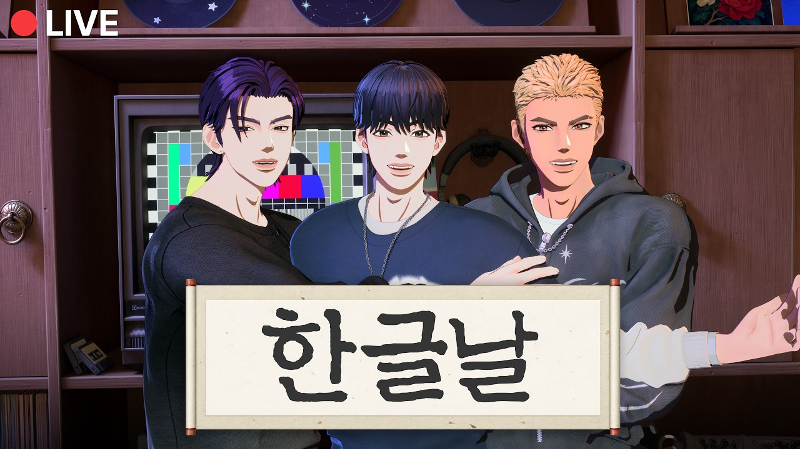

WE GO-6分類：YOUTUBE · 直播日期：2026-10-04WE GO-6 出道宣傳大作戰 #3WE GO-6 字幕初始紀錄：2026-10-05（依文章發布日期）在 YouTube 觀看原始影片×載入 YouTube 播放器 繁中韓文雙語字幕大小20%字幕位置 原先位置懸浮字幕全螢幕劇院模式繁體中文點播放後，字幕會顯示在這裡韓文 1010速度 0.75×1×1.25×1.5×2×00:00 / --:-- 分享這篇@fLINE𝕏 影片翻譯評分☆☆☆☆☆選擇 1～5 星展開雙語逐字稿 點擊查看完整內容雙語逐字稿雙語韓文繁中 自動跟隨播放文字大小 A−A＋重設字幕偏移（秒） 字幕比聲音早出現時填正數00:05:21하나 둘 셋 안녕하세요 WE GO-6입니다一 二 三 大家好 我們是 WE GO-600:05:35네.是00:05:39안녕하세요.大家好00:05:42저녁 식사는 다들 든든히 하셨나요?大家晚餐都有好好吃飽嗎？00:05:49맛있게 드셨어요? 오,有吃得開心嗎？喔00:05:51좋은 저녁이에요.晚上好00:05:55안녕하세요.大家好00:05:57보고 싶었어.好想你們00:05:58보고 싶었어.好想你們00:06:03자, 오늘은 위대할대 위대할대好 今天是 WE GO-6 宣傳大作戰00:06:073회 차입니다.第三集00:06:08와우!哇00:06:08우후!哇00:06:09벌써已經00:06:09예,已經00:06:10세 번째써第三次了00:06:11에피소드集00:06:13쓰集00:06:14트 쓰 쓰 해 보세요.集00:06:17쓰泰岡哥很厲害00:06:18오! 오.泰岡哥很厲害00:06:19어.泰岡哥很厲害00:06:19어. 태강형 잘한다.泰岡哥很厲害00:06:21왜 본인이 놀래 잘해 놓고?明明是你自己做得很好 為什麼嚇到？00:06:24어. 네가 잘해 놓고 왜 네가 놀래?對啊 你做得很好 為什麼自己嚇到？00:06:26어. 약간 어有點00:06:28잘했 잘했는데.做得很好很好00:06:29삼겹살이랑 새우 드셨다고? 맛있다.你們說吃了五花肉和蝦子？聽起來好好吃00:06:32와 맛있겠다. 삼겹살이랑 새우.哇 好好吃喔 五花肉和蝦子00:06:34동시에同時00:06:35맛있겠다.感覺好好吃00:06:35어 태강형 삼겹살이랑 새우도 한번 해感覺好好吃00:06:37주시면 안 돼요?給我們吃好不好？00:06:39너 너 예리하다.지你很敏銳耶00:06:42않는다.什麼？00:06:43뭐라고요?什麼？00:06:43삼겹살이랑什麼？00:06:44새우.蝦子00:06:45어? 삼겹살이랑 새우요?咦？五花肉和蝦子嗎？00:06:46오.咦？五花肉和蝦子嗎？00:06:50아 진짜真的00:06:51어 태강이 뭐야 바뀌다 너 연습했어喔 你在後面練習了嗎？00:06:54뒤에서在後面00:06:54아니 저 뭐 자주 말하는 단어들은在後面00:06:57되게 쉽 쉽죠真的很簡單00:06:59어很簡單嗎？00:07:00쉽다고요很簡單嗎？00:07:02아 아 시작하자마자 싸워 아才剛開始就吵架了00:07:05시작하자마자才剛開始00:07:05시작하자마자 싸우지才剛開始00:07:08예那麼 今天備受期待的 PD 會是誰呢？00:07:10자 오늘 대망의 피디 님은 누굴까요?那麼 今天備受期待的 PD 會是誰呢？00:07:14빠 어那麼 今天備受期待的 PD 會是誰呢？00:07:16어宣傳 Hashtag00:07:16빠밤 빠밤 빠밤빠밤宣傳 Hashtag00:07:19빠밤빠라빠라바라바라Hashtag idol_WEGO600:07:22예idol_WEGO600:07:30어 생겼다啊 出來了00:07:32나왔다 나왔다네 안녕하십니까出來了 出來了 大家好00:07:34차피디입니다.我是車 PD00:07:35우후我是車 PD00:07:37차피디 님車 PD00:07:38잘 부탁드립니다請多多指教00:07:39잘 부탁드니다 잘 부탁드리겠습니다.請多多指教00:07:41잘 부탁드립니다.請多多指教00:07:42잘 부탁드니다. 오늘은 댄스請多多指教 今天要拍舞蹈00:07:44챌린지들을 찍어 볼 거고요.挑戰影片00:07:46와!好 要拍挑戰影片00:07:46예. 챌린지를 찍어서 위고식스를好 要拍挑戰影片00:07:49알려보자.讓大家認識 WE GO-600:07:51챌린지 전파 해시태그가 있습니다.挑戰宣傳有指定的 Hashtag00:07:53전파 해시태그宣傳 Hashtag00:07:54전파시태그宣傳 Hashtag00:07:54해시태그 아이돌 언더바 위고 6.宣傳 Hashtag00:07:58예.idol_WEGO600:07:59아,idol_WEGO600:08:01아이돌 언더버 위고식.idol_WEGO600:08:02네.idol_WEGO600:08:03아, 그래서 제가啊 所以我00:08:05네. 오늘 같은 경우에는 멤버분들한테是的 像今天這樣 我有交作業給成員們00:08:09숙제를 내드렸습니다.我有交作業給成員們00:08:12자,分成兩組00:08:12이렇게 두 그룹으로 나녀서分成兩組00:08:15네.先各自準備一個挑戰00:08:16챌린지들을 우선 하나씩先各自準備一個挑戰00:08:19음,準備好帶來00:08:19준비 해 와라.準備好帶來00:08:21응.我們怎麼分組的？00:08:21응.我們怎麼分組的？00:08:22어떻게죠, 팀이?我們怎麼分組的？00:08:25어, 어떻게 였더라? 이렇게怎麼分來著？是這樣00:08:27저랑 저랑 쿠우타我跟我跟 Kuta00:08:30아 쿠우타랑 제로啊 Kuta 和 Zero00:08:31쿠우타랑 제로가 하나를 준비해 왔고요.Kuta 和 Zero 準備了一個00:08:33하나 준비했습니다.準備了一個00:08:34그리고 태강이랑還有羽然和00:08:37우연히羽然00:08:38네羽然00:08:38예羽然00:08:38네羽然00:08:39이렇게 둘이서 하나를 준비를 해 왔고兩個人準備了一個00:08:42우리 PD 님은 혼자我們 PD 一個人00:08:45예我們 PD 一個人00:08:45오와또我們 PD 一個人00:08:48짝꿍이 없어 가지고因為沒有搭檔00:08:49혼자一個人00:08:50누가 우리 슈 외롭게 했어?是誰讓我們 Xiu 孤單了？00:08:52우연이형이요? 어是羽然哥嗎？00:08:53어 나였어 아네啊 是我嗎？00:08:57일단은 저희가 챌린지를 세 개를總之我們準備了三個挑戰00:09:01준비를 해 왔고요.準備了三個00:09:02네如果時間還有剩的話00:09:02그리고 또 만약에 시간이 남게 되면은如果時間還有剩的話00:09:05네我也會和大家在 Space 裡00:09:06또 여러분들과 제가 또 스페이스에서我也會和大家在 Space 裡00:09:08얘기를 하면서 내 위식 리스트란 거를聊天時 我有看到一個「WE GO-6 願望清單」00:09:11들었어요.我有看到00:09:13여러분들이 보시고 싶으신 챌린지들을大家想看的挑戰00:09:15되게 많이 올려 주셨더라고요.真的投稿了很多00:09:17그래서 조금 있다. 저는 조금 한번所以待會兒我稍微00:09:19오늘 오기 전에 한번 훑어봤는데來之前先大致看了一下00:09:21다 같이 좀 보면서 두 세 개 정도大家一起看看 大概選兩三個00:09:24시간이 되면은네如果時間允許的話00:09:25찍어 보면은 좋을 것 같습니다.拍一下應該也不錯00:09:27너무 좋아. 너무 좋아요. 너무太好了 太好了 太00:09:28좋아요.好了00:09:30자, PD 님은 저희랑 쳐요.PD 要跟我們一起拍00:09:34그럴까요?要一起嗎？00:09:38바로 기분 좋아져 버리네요.心情馬上變好了00:09:42그럼而且大家也都願意一起陪我們00:09:42어, 또 여러분이 저희랑 저희 이렇게而且大家也都願意一起陪我們00:09:44해 주시니까因為大家願意陪我們00:09:45오케이 오케이 오케이. 여러분과 함께好 好 好 和大家一起00:09:47하면은 뭐 100개든 1천000개든的話 不管一百個還是一千個00:09:49혼자 할 수 있죠.我一個人也能拍00:09:49어.我一個人也能拍00:09:51자, 그러면은 어떻게 좀 한 팀씩那麼要不要一組一組來00:09:55먼저 챌린지를 좀 찍으면서先拍挑戰影片00:09:57네.然後我會以 PD 的身分00:09:58이렇게 제가 PD로서 조금씩然後我會以 PD 的身分00:10:00피드백給你們一些回饋00:10:01예. 피드백 그리면서 해보면은 좋을給回饋 一邊拍應該不錯00:10:03것 같은데. 자,那麼00:10:04누가 먼저 하시겠어요?誰要先來？00:10:06아, 그래도 오늘不過今天00:10:09진행자가主持人00:10:10저是我們車 PD00:10:10우리 차피디 님이신데.是我們車 PD00:10:12차피디 님. 차피님께서 어떻게 하면車 PD 要不要先示範一下00:10:14되는 건지를 좀 먼저 보여 주시면告訴我們該怎麼做00:10:16좋지 않을까 생각을 해 보긴 했지만我本來是這麼想的00:10:19그래도 저희가 먼저 하는게 낫겠죠.不過還是我們先來比較好吧00:10:22어형 빠르신데요?哥反應很快耶00:10:22아니요.哥反應很快耶00:10:23오케이. 제가 먼저 하겠습니다.好 那我先來00:10:25어好 那我先來00:10:26예說得真好00:10:27말 잘 거.說得真好00:10:27그러면은說得真好00:10:30조금 먼저稍微先00:10:36아 근데 오不過 哇00:10:39어떤 걸 하 기대됩니다.好期待會是什麼00:10:42그 하츠투 하츠의 주은 선배님이我準備的是 Hearts2Hearts 的 Jooeun 前輩00:10:46네.是00:10:47파핑을 엄청 잘하셔서 파핑 챌린지를她很會跳 Popping 所以我準備了 Popping 挑戰00:10:50와. 저도 파핑을 굉장히 좋아하는哇 我也很喜歡 Popping00:10:53사람으로서 부족하지만 네.雖然跳得還不太好00:10:55좀 한번 열심히 한번 좀 준비를 해但我還是很認真地準備了一下00:10:59봤는데我有準備00:11:00어 형님 그거 그거 아닙니까? 그哥 是不是那個？那個00:11:02삐용 빠락 삐용 빠락 빠바바 막 이거「嗶咻 啪啦 嗶咻 啪啦 啪啪啪」那個00:11:06아니에요?不是嗎？00:11:08맞아요.沒錯00:11:09맞아요. 맞아요. 잘 알고 있다.沒錯 沒錯 你很清楚嘛00:11:11그러니까 그렇죠. 엄청 엄청就是啊 超級00:11:15와不過時間有點長 我想先排練幾次00:11:15아 근데 좀 기장이 돼서 조금 리어설不過時間有點長 我想先排練幾次00:11:18몇 번만 좀 해보고 괜찮을까? 그럼可以嗎？那麼00:11:20그럼 그럼 내가 와那我來試試看00:11:28와우太好了00:11:38와 우와 우와 우와太難了00:11:41너무 어려운데요太難了00:11:44와우太難了00:11:51에이接 Wave00:11:52오이要放音樂了00:11:53에이到這裡都很完美 直到最後00:11:55예還可以嗎？00:11:55오후嗯 很可愛 不過最後00:11:59오 오 어OK Zero也想試試看嗎？00:12:05아哇 哥最後那段00:12:07와 형 마지막이哇 哥最後那段00:12:09마지막이 너무 멋있는데요最後真的太帥了00:12:10삐공最後真的太帥了00:12:11지금 볼까요現在要看嗎？00:12:12어네네 그러면습니다 쳤습니다.好好 那我拍了00:12:13하하.好好 那我拍了00:12:15아이 씨 엄청난 걸 준비하형.哇 哥準備了很厲害的東西00:12:17와 이거 너무哇 這個真的太00:12:18멋있다. 또 차피디가 된 만큼帥了 而且既然當了車 PD00:12:21또 잘 해 봐야 되니까.就得好好表現才行00:12:23와우 와우 와우 와우 와 와우就得好好表現才行00:12:25자 우선은 한번 해 보도록那我先試著跳一次00:12:27하겠습니다. 파이팅. 화이팅.加油 加油00:12:28그러면 어떻게 신호 주시면은 제가那我給訊號的話 你就00:12:31노래 뭐 틀어 드릴게요.幫我放音樂00:12:32네. 볼륨 혹시 조금 키워 주실 수可以把音量稍微調大一點嗎00:12:34있나요?可以嗎？00:12:34볼륨이요? 오케이. 잠깐만可以嗎？00:12:36하고 이게 되게 좀因為這個真的要00:12:38초집중을 해야 되는 거라.非常專心才行00:12:40네. 알겠습니다.好 我知道了00:12:40살짝만 조용히해好 我知道了00:12:42네. 집중하겠습니다네.好 我會專心的00:12:43볼륨 조금만 올려 주세요.請把音量稍微調大一點00:12:45잘 찍어야 되니까.이因為要拍好一點00:12:50정도 볼륨 체크.音量這樣可以嗎？00:12:52오케이.OK00:12:53파이팅.加油00:12:57끝에서부터 네. 들어주시면從最後面開始放就好00:12:58감사하겠습니다. 신호 주면 노래麻煩你了 我給訊號就放音樂00:13:00갈게요.我給訊號就開始00:13:01네.가 볼게요.好 我來了00:13:01형 화이팅.好 我來了00:13:02저한 뭐 두 세 번 찍어야 될 것我可能要拍兩三次00:13:03같으니까.應該要拍幾次00:13:04파이팅.加油00:13:05파이팅.加油00:13:34와就好了00:13:41와我再試一次就好00:13:44에이 와我再試一次就好00:13:45한 번만 다시 해보겠습니다.我再試一次就好00:13:46한만 더再一次就好00:13:47예再一次就好00:13:47오케이再一次就好00:13:48바로 는데再一次就好00:13:50와要開始了嗎？00:13:50자하실까요?要開始了嗎？00:13:52예 준비되면 말해 주세요.準備好就跟我說00:13:56어 좋은데嗯 不錯00:13:57괜찮나요? 어可以嗎？00:13:58아 다행입니다.太好了00:14:01여러분들이 슈에 시우의 리듬감은大家覺得 Xiu的節奏感00:14:05정말 놀라워.真的很驚人00:14:09오케이 렛츠 고. 장에 어떻게OK Let’s go 這裡要怎麼00:14:11웨이브가接 Wave00:14:12노래 갈게요.要放音樂了00:14:52오까지 완벽했는데 마지막까지到這裡都很完美 直到最後00:14:56괜찮았나요?還可以嗎？00:14:57어 귀여운데 마지막에嗯 很可愛 不過最後00:14:59와嗯 很可愛 不過最後00:14:59오케이嗯 很可愛 不過最後00:15:01오케이어 제로 해보고 싶다고요?OK Zero也想試試看嗎？00:15:03언제 제가요? 예. 제로 한번我什麼時候說了？好 Zero來一次00:15:05보여. 오케.給大家看 好00:15:07제로가 연습하는데 형보다 잘할 자신이Zero練習時說有自信跳得比哥好00:15:09있다 그래가고所以才這麼說00:15:09제가 제가 그랬다고.所以才這麼說00:15:10아 장난.開玩笑的00:15:12야 제로 가자.來吧 Zero00:15:13제로 가자.Zero 加油00:15:14보여줘요.給我們看看00:15:16잠깐만 형 뒤에서 도줄게.이어서 입고等一下 哥我在後面幫你弄一下 接著穿00:15:18줄게.我幫你00:15:18이거 입고 줄 거야. 그我幫你00:15:20이거 입고 거 같으니까因為好像要穿這個00:15:21그러면은那麼00:15:24하나 둘 셋 얍.一 二 三 呀00:15:30에이今天看起來會跳得很好耶00:15:30오렛츠今天看起來會跳得很好耶00:15:33옷 잘할 것 같네 오늘. 아군요. 저今天看起來會跳得很好耶00:15:36이거 처음에 띠르륵 띠르륵一開始這裡是「嘟嚕嚕 嘟嚕嚕」00:15:39오케이 오케이OK OK00:15:44오케이 수고시들어 오케이 오케이OK 辛苦了 OK OK00:15:45오케이 시작OK 開始00:15:50오Wave00:15:52에이Wave00:15:52웨이브Wave00:15:53어 어이Wave00:15:55이Wave00:16:07어 야야야所以我有預料到00:16:11어不是這樣嗎？像這樣00:16:14이런 이런 거 아니었나? 이런 거不是這樣嗎？像這樣00:16:15아니었어요?不是嗎？00:16:16혹시 영화 관상 보셨어요?你有看過電影《觀相》嗎？00:16:17관상이요?《觀相》嗎？00:16:18예. 그對 那個00:16:20아이不是這樣嗎？啊 不是00:16:21이거 아니에요? 아 아닙니다.不是這樣嗎？啊 不是00:16:22아닙니다. 저 형 보고 아이솔레이션不是 我是看著哥做這個 Isolation00:16:24이거. 예.這個 對00:16:25아這個 對00:16:27좋은데요. 굿.不錯耶 很好00:16:28습등력이 너무 좋아.學得很快耶00:16:29어. 아 좋은데요.嗯 啊 很不錯00:16:30어깨 넘어로 그냥 바로 배워버리.直接看著哥就學會了00:16:32배로 잘했어.做得比我好00:16:33음太害羞了 所以拍到現在有點00:16:33굉장히 부끄러워서 쳐달보.太害羞了 所以拍到現在有點00:16:38아你們說他完全掌控了節奏00:16:38여러분이 박자를 아주 갖고 논다고.你們說他完全掌控了節奏00:16:41어. 어.你們說他完全掌控了節奏00:16:44박자를 아주 갖고 노네.完全在玩弄節奏耶00:16:48저에게 신경을 안 써 주셨으면希望你們不要注意我00:16:50좋겠습니다.就好了00:16:50아 알겠습니다. 알겠습니다.就好了00:16:53어 아 근데 브야就好了00:16:55예選得太好了00:16:56선택 너무 좋았다.選得太好了00:16:57아 진짜요?真的嗎？00:16:57어 진짜 너무 최고真的嗎？00:17:01역시 우리 시 아果然是我們 Xiu 啊00:17:02열심히 하겠습니다. 아我會努力的00:17:04우泰岡也來試試看吧00:17:05태강이도 해보자.泰岡也來試試看吧00:17:07태강이도 해볼까? 오케니泰岡也要試試看嗎？OK00:17:10아니 오케이 오케이 오케 오케 오케我這裡有點痛00:17:12저 여기 좀 아파 가지고我這裡有點痛00:17:14아 오케이 오케啊 好 OK00:17:15아프다고 합니다. 여러분 아파롱他說他會痛 大家00:17:17위他說他會痛 大家00:17:21여러분 잠시만 기다려 주시면은 금방請大家稍等一下 我們馬上就回來00:17:23돌아올게요.馬上回來00:17:24잠시만요.等一下00:17:28아 나중에 제가 한번 보여我之後再示範給大家看00:17:29드리겠습니다.我會示範的00:17:33루我會示範的00:17:35빰빰빰先活動一下身體00:17:42너무 멋있네. 역시 이게 PD 님이太帥了 果然 PD 先這樣開場00:17:46스타트를 이렇게 끊어 주시니까.帶起氣勢了00:17:47어 근데 진짜 어습니다. 와 형 근데嗯 真的很厲害 哥不過真的00:17:49진짜真的00:17:50어떻게 몸이 그렇게 와 움직이지?身體怎麼能那樣動啊？00:17:53아이고 아닙니다.哎呀 沒有啦00:17:54땅哎呀 沒有啦00:17:55뼈가 없는 줄 알았어.我還以為你沒有骨頭00:17:57음.我還以為我的骨頭分得00:17:58어, 저는 뼈가 더 많이 나눠져 있는我還以為我的骨頭分得00:18:00줄 알았어요.比較多00:18:00아, 관절이.比較多00:18:01예. 관절이.對 關節00:18:03와, 진짜 너무 신기하다. 둥 둥 둔哇 真的好神奇00:18:07둔希望成品會很棒00:18:08잘 나왔으면 좋겠네요.希望成品會很棒00:18:10제가 PD룸에서 한번我在 PD 房的時候也有00:18:13네. 했던 것들.做過那些00:18:15자.做過那些00:18:17자, 다음.好 下一個00:18:19다음 어떤 팀이 하실지 좀 이야기를要不要討論看看00:18:22나눠 볼까요?下一組由誰來？00:18:23음. 아 제로가嗯 啊 Zero00:18:24이嗯 啊 Zero00:18:25여세를 몰아 가지고 기세를 몰아趁著這股氣勢00:18:27가지고네 그러면은 태강 우연 팀 먼저那就讓羽然和泰岡組先來00:18:30가도록先開始吧00:18:30오케이先開始吧00:18:31형 화이팅哥加油00:18:33그럴까好嗎？00:18:33그럴까요好嗎？00:18:34우리는 우리는 뭘 준비했지 봤까我們準備了什麼來著？00:18:36저희는 좀 신나는 걸로 준비했습니다.我們準備了比較歡樂的00:18:38소개 한번 해 주세요.請介紹一下00:18:39아네 안녕하세요. 주태강입니다.大家好 我是朱泰岡00:18:41안녕하세요. 빡빡입니다.네大家好 我是大光頭00:18:45네. 저희는是的 我們00:18:46어떤 춤 준비하셨는지 네. 한번準備了什麼舞蹈呢？請00:18:48저주세요.告訴我們00:18:48저는 어 리더 형께서 또告訴我們00:18:53멋있는 거 보여 주실 거라고 생각을表演很帥的東西00:18:55했기 때문에 예상을 했기 때문에所以我有預料到00:18:57저희는 신나는 곡으로 준비를因此我們準備了比較歡樂的歌00:18:58했습니다.準備好了00:18:59신나는 곡.歡樂的歌00:19:00네.希望大家看的時候也能開心00:19:00여러분들도 좀 이렇게 보시면서 신나실希望大家看的時候也能開心00:19:02수 있게可以一起開心00:19:03우리도 신나고 이렇게 좀 이렇게我們也能跟著開心00:19:05분위기를 업시킬 수 있는把氣氛炒熱00:19:07업 좋아요. 좋아요.炒熱 不錯 不錯00:19:08네. 그런 거를 준비를 해 봤습니다.我們準備了這樣的內容00:19:11아 근데 파이팅. 어,不過 加油00:19:12좀 그게 있다.不過有一點00:19:14우리가 항상一直以來00:19:16막 이렇게 우리끼리 계속 찍고 작업해我們都自己拍自己做00:19:18가지고 그렇게 해서 이제 여러분께做好之後再00:19:21짠하고 보여 드리는데驚喜地呈現給大家00:19:22네.驚喜地呈現給大家00:19:23이게 좀 찍는 과정이라 해야 될까요?這算是拍攝過程嗎？00:19:26이런 거 조금 보여 드리게 좀 부끄럽把這個過程給大家看 有點害羞00:19:30부끄러운 거 같기도 하고 그런데好像有點不好意思00:19:32그래도 한번네 태강이와 네.不過還是和巴度一起試試看00:19:36한번 해보겠습니다.我們來試試看00:19:37파이팅. 형님 렛츠고.加油 哥哥 Let’s go00:19:39어 긴장 화이팅 화이팅有點緊張 加油 加油00:19:41파이팅 파이팅 파이팅加油 加油 加油00:19:42어 긴장돼好緊張00:19:43신나게 해 주십시오請跳得開心一點00:19:45어 신하게好 開心一點00:19:48신나게 형 파이팅哥 開心一點 加油00:19:50어 신하게好 開心一點00:19:52브링 윙오好 開心一點00:19:56브링 위這是很重要的重點00:19:58위유 붕 붕 붕 붕這個真的很神奇00:20:01이게 이게 제일 신기해요這個真的很神奇00:20:02어 이게 너무 신기해 봉 어디부터這個真的好神奇 要從哪裡開始？00:20:04하는 거야? 손부터손 아 이거從手開始嗎？手 啊這個00:20:09아닌데 형네 번 하시던데不是 哥你剛才不是做了四次嗎？00:20:11손 아 손목 손목 아니手 手腕 手腕嗎？00:20:14처음에 이거 있어요一開始有這個動作00:20:14아 처음에 손바닥一開始有這個動作00:20:16아 그러면 처음에구나 똥 똥 똥 똥啊 所以是一開始啊00:20:37뒤에 뒤에가 조금 더 나와야 되는데.後面應該要再多一點00:20:38아, 그래요?啊 是嗎？00:20:39어, 뒤에가 조금 더 길어야 되는데.嗯 後面要再長一點才行00:20:40그러면은 음원으로那要不要用音源？00:20:41아, 음원으로 갈까요?啊 要用音源嗎？00:20:58어어. 네. 좋아요. 좋아요.嗯嗯 好 好00:20:59좋아요.很好00:21:00저희는 또 키키 선배님의 팝 팝오프를我們準備的是 KIKI 前輩的《Pop Pop Off》00:21:03준비했습니다.我們準備好了00:21:04오케이. 좋습니다.OK 很好00:21:07몸 한번 부세요.先活動一下身體00:21:08아 예. 이것도 팝은 팝이에요.啊 對 這個也是 Popping00:21:17오렛츠고.Let’s go00:21:24어 가고 여기서 그러면은 빰빰빰這裡接下去 然後這裡 啪啪啪00:21:28그러면은 빰 빰빰然後 啪 啪啪啪00:21:32우야 그다음에 빰 하고 형 오시면은接著 嗚呀 然後啪 哥哥過來的話00:21:36제가我就00:21:40요런 느낌으로像這種感覺00:21:40요런 느낌으로 할까요?像這種感覺00:21:48아자 우선 한번 테스트 한번가好 那我們先測試一次00:21:50볼게요.試試看00:21:51리허설 리허설排練 排練00:21:52머리가 새하얘졌어요.我緊張到頭髮都白了00:21:54어 왜?咦 為什麼？00:21:54아 긴장이 되는데어咦 為什麼？00:21:56은근 긴장됩니다.我也莫名緊張起來了00:21:57어떡하지? 너무 긴장되는데.怎麼辦？我好緊張00:21:58네가 긴장하면 나도 긴장한단 말이야.你緊張的話 我也會跟著緊張啊00:22:01안 돼팅. 아不行 加油啊00:22:02할 수 있어?可以嗎？00:22:02안 돼. 안 돼.可以嗎？00:22:03자 오케이.好 OK00:22:04선 제대로 한번 해 볼게요.我先好好試一次00:22:05네네.好 好00:22:08갑니다.렛츠要開始了 Let’s go00:22:18아 죄송해요. 다시 할게요. 다시啊 對不起 我重來 重來00:22:20다시.再一次00:22:20아니 시작도 안 했잖아요. 잠깐만再一次00:22:22대가 엎드려.趴下00:22:24아 지금 숙제 안 해 왔어?你現在沒做功課嗎？00:22:26아 해 왔습니다. 해 왔습니다.有做 有做00:22:27확실해야 누구보다要確定啊 比誰都00:22:29했어? 오케이.做了嗎？OK00:22:30자 다시 다시 갈게요.好 再來一次00:22:33지금 긴장해서 그래 긴장해서 그래現在是因為緊張啦 因為緊張00:22:35하지 마. 아 긴장이 됩니다.不要這樣 啊 我好緊張00:22:37오케이. 자 노래 다시 리허설이니까OK 音樂是排練用的 放輕鬆00:22:39편하게.放輕鬆00:22:40아 리허설.啊 是排練00:22:40네啊 是排練00:22:41태강이 아까 잘했어요.泰岡剛剛做得很好00:22:43아까 잘했어.剛剛做得很好00:22:44할 수 있어.你做得到00:22:55아이고. 잠깐만.哎呀 等一下00:22:57아 잠시만요.啊 等我一下00:22:59오케이. 오케이. 괜찮아요.OK OK 沒關係00:23:03오케. 하고 계세요.OK 繼續做00:23:12하고 바로 리듬 가는 거야. 바로 하然後馬上接節奏 馬上就00:23:15타開始00:23:23오케이 오케이OK OK00:23:27떨지 마 떨지 마 떨려요不要抖 不要抖 我在抖00:23:30가볼게요 렛츠고我要開始了 Let’s go00:24:02오喔00:24:05어 했다 했다 했다 했다 했다有了 有了 有了 有了 有了00:24:06아 죄송해 네啊 對不起00:24:08죄송해對不起00:24:09죄송해요.對不起00:24:09고그한 피드백을 좀 드려도 될까?對不起00:24:11아, 제가 이거 잘 못했습니다.啊 這個我做得不好00:24:12아, 거기가 아닙니다.啊 不是那裡00:24:12어디죠?啊 不是那裡00:24:13이거 갈 때가 지금 너무 서서做這個動作的時候 現在站得太直了00:24:15하는데.了00:24:18그렇죠.對吧00:24:19음. 후嗯00:24:20빰빰빠.啪啪啪啪00:24:22그죠?對吧？00:24:23조금 더 어깨를 써야 되죠.이肩膀要再多用一點00:24:24업다운이 조금 더 있어야 될 것我覺得上下律動00:24:26같습니다.還要再明顯一點00:24:26아, 알겠습니다.還要再明顯一點00:24:27오케이.OK00:24:27다시가 볼게요.OK00:24:29잠깐만요.等一下00:24:30너무 중요한 포인트.這是很重要的重點00:24:31방금 차피디가剛才車 PD00:24:34차피 님 딱 찍어 주신이 부분車 PD 剛才特別指出的這個部分00:24:35있잖아.對吧？00:24:36네.요 요분이 우리가 진짜 약간對 這裡我們真的要稍微00:24:38이렇게 우리끼리 딱 신나야 돼.我們自己先玩得開心00:24:41그래야 보시는 분들도 신나.這樣觀眾看了也會開心00:24:43되게 막要很有那種00:24:44우리끼리 막 노는 느낌으로.我們自己玩得很開心的感覺00:24:46제가 더 신나게我會再更投入一點00:24:47오케이.OK00:24:47해보겠습니다.OK00:24:48자자. 더 안 차는 발도 띄어 주셔야好好 踢出去的那隻腳也要抬起來00:24:52돼요.才行00:24:54그죠 그죠 그죠 그렇죠. 신나게對吧對吧對吧 沒錯 要開心一點00:24:55신나게 완전 아再開心一點 完全投入 啊00:25:01띠띠바對不起00:25:04띠띠띠네很好00:25:06좋아요.很好00:25:07자 숨 고르시고好 先喘口氣00:25:09오케 물 뭐 있어 물? 어 제가 제가OK 有水嗎？水？我來我來00:25:12제가 들고 오겠습니다. 어네 내가我去拿 我拿過來00:25:14갈게.我去00:25:16파이팅. 자 따따 따따따 빠 빠 빠我去00:25:22빠 빠對不起00:25:26후 빠빠따沒關係 沒關係00:25:31하 후.節奏有點快00:25:40응.謝謝00:25:42감사합니다.謝謝00:25:52자, 두 번째 최종 리허설.好 第二次 最後排練00:25:55최종 리허설最後排練00:25:56들어가겠습니다.要開始了00:25:57네. 오케이.好 OK00:25:58지금 표정이 조금 여유가 없거든요.你現在表情有點不太從容00:26:00네.是00:26:00표정이 여유가 없어요.是00:26:01표정이 여유가 없어요.表情不太從容00:26:02예. 지금 되게 틀릴까 봐 조마조마한對 現在看起來很像怕出錯而忐忑不安00:26:05사람처럼 보이니까的人00:26:06맞습니다.沒錯00:26:07좀 더 여유 있게再放鬆一點00:26:08여유 있게. 여유 있게가 보세요.放鬆一點 試著放輕鬆00:26:10여유 있게 신나게 뭔가 그렇지放鬆一點 開心一點 就是那種感覺00:26:12우리끼리 예 얘 한번 외치자 예가我們自己一起喊一聲「耶」吧 需要喊一聲耶00:26:16필요한데 예需要「耶」00:26:17예耶00:26:21틀릴까 봐怕出錯00:26:21예 이렇게 약간 요런 느낌으로 가는怕出錯00:26:24거지就是這樣00:26:24자 오케이자 빠빠就是這樣00:26:27준비되시면 말씀드릴게요자네準備好了我就告訴你00:26:29해보겠습니다. 파이팅.我要試試看 加油00:26:31가보자려츠.來吧 Let’s go00:27:05예.是00:27:10DJ 오렌지.DJ Orange00:27:11아, 이런 느낌.啊 是這種感覺00:27:12DJ 오렌지.DJ Orange00:27:15어,感覺怎麼樣？00:27:16어땠어요?感覺怎麼樣？00:27:18너무 멋있는데요. 엄청 신나.好帥喔 超級嗨00:27:22어땠나요? 우리 실시간으로 모니터가感覺怎麼樣？我們沒辦法即時監看00:27:23안 되기는 하거든.對吧00:27:24아 모니터 못 했어요.啊 沒辦法監看00:27:27아 머리가啊 我的頭00:27:28어 엄청 엄청 신났어요.超級超級嗨00:27:29아 신나요?啊 很嗨嗎？00:27:32괜찮았나요?還可以嗎？00:27:34그러면은 킵하고 한 번 더那就先保留 再拍一次00:27:36킵하고 한 번 더 킵하고 한 번 더先保留 再拍一次00:27:38아근데 사실 제가 이때 제대로不過其實這裡我沒有好好00:27:41아이솔레이션 못 해 가지고 이게 좀做 Isolation 所以有點00:27:43아쉽긴 합니다.可惜00:27:44여기가 맞아. 우是這裡沒錯 嗚00:27:46혹시或許00:27:47조금만 피드백 하나 드려도 되겠?我可以給你一點回饋嗎？00:27:49아 그럼요.當然可以00:27:50처음에 골반이 더 쓰였으면一開始如果能多用一點骨盆00:27:51좋겠습니다.會更好00:27:52파파.會更好00:27:53그렇죠.對吧00:27:54약간 요런 느낌입니다.大概是這種感覺00:27:55궁차大概是這種感覺00:27:56ugu파.對吧 沒錯 那個 Popping00:27:57그죠? 그렇죠. 그 팝對吧 沒錯 那個 Popping00:27:59조금 더再多一點00:28:00엉덩이가臀部00:28:02엉덩이가 아니라 골반.不是臀部 是骨盆00:28:03나 나 자우로不是臀部 是骨盆00:28:06나 한번 봐 주시면 나 한번 봐 줘.可以看我一下嗎？看看我00:28:08네.好00:28:11어 좋은데요. 봐줘.嗯 不錯 看我00:28:15아니 잘 나 지금 잘하고 있네. 한번不 我現在做得很好吧？看一下00:28:17봐줘.看我00:28:18팝.看我00:28:19어 예. 아 좋아요.嗯 對 很好00:28:21팝.嗯 不錯 這樣00:28:21어 좋아요.이 이런嗯 不錯 這樣00:28:23좋습니다.很好00:28:24알겠습니다.我知道了00:28:25팝팝 잉땡. 오케이.Popping Popping 嘿 OK00:28:27서령 가보겠습니다.네我來試試看00:28:30오케이 렛츠고.OK Let’s go00:28:45뜨거워.好熱00:28:47다시 하겠습니다.我再來一次00:28:49다시 하겠습니다.我再來一次00:28:50골반骨盆00:28:51골반 살려다 보니까 까먹었습니다.因為想把骨盆動作做好就忘記了00:28:53골반 약했습니다. 골반骨盆不夠明顯 骨盆00:28:55약했습니다.不夠明顯00:28:55아직도 약했어.不夠明顯00:28:56골반骨盆00:28:56아니 빨리 끊어 줘서 고마워. 아 형骨盆00:28:59어嗯00:29:00저 사실이 박자가其實那個節拍00:29:02아 들어갈 때進去的時候00:29:03네是00:29:04딴 따다是00:29:07딴다是00:29:08딴다被這樣摸頭就想睡了00:29:10딴따다昨天練習的時候這段太急了00:29:10어 딴다昨天練習的時候這段太急了00:29:12빠빠昨天練習的時候這段太急了00:29:13어제 연습할 때 이게 되게 급해昨天練習的時候這段太急了00:29:15가지고所以00:29:16예可以嗎？OK00:29:16할 수 있겠어요 오케이可以嗎？OK00:29:17렛츠고Let’s go00:29:18파이팅加油00:29:19파이팅파加油00:29:20우리用力一點00:29:21세게用力一點00:29:22자 테이크원好 Take one00:29:23네好00:29:24갑니다. 빰빠밤好00:29:38아이 잠깐만 다시 할게요. 아啊 等一下 我重來 對不起00:29:40죄송해요.對不起00:29:41아 죄송해요 진짜.啊 真的對不起00:29:44아 잘 찍고 싶어 진짜.我真的很想拍好00:29:47아 그럼啊 那麼00:29:49마음에 들 때까지 또直到你滿意為止00:29:50나와야지 또. 아 죄송합니다 형要繼續拍才行 對不起 哥00:29:55진짜 열심히 하고 있는데.我真的很努力了00:29:57바로 렛츠고.馬上 Let’s go00:30:15그렇OK00:30:25죄송해.對不起00:30:25괜찮아 괜찮아.對不起00:30:26박자가 좀 빠르긴 해요節奏有點快00:30:28죄송해. 내가 좀 빠르지. 이번엔 나抱歉 我好像快了一點 這次我00:30:30머리 박았어. 괜찮아.剛剛撞到頭了 沒關係00:30:31너 지금你現在00:30:32아 죄송啊 對不起00:30:33차피디 님한테 고난 주려고 일是想讓車 PD 為難嗎？00:30:35아 아니 아 아닙니다. 어啊 不不不 不是的00:30:37오케이 오케이 오케이 연습 시간OK OK OK 給你們練習時間00:30:405분 드리겠습니다. 나오세요.五分鐘 請出來00:30:42아 저 저희가啊 我們00:30:43아 바로 해주시나요? 먼저 가도록啊 要直接拍嗎？那我們先來00:30:44하겠습니다.先開始00:30:45니다.沒關係00:30:45괜찮습니다.沒關係00:30:46아, 어제 또 준비해 놓은 거啊 昨天也準備好的00:30:48자, 소개 부탁드리겠습니다.好 請先自我介紹00:30:50네. 안녕하세요. 저희 저는好 大家好 我們我是00:30:52제로입니다.我是 Zero00:30:53안녕하세요. 저는 쿠우타입니다. 딴따.大家好 我是 Kuta00:30:56네. 인터뷰 잠깐 진행하도록好 我們來簡短做個訪問00:30:57하겠습니다.一下00:30:58인터뷰訪問00:30:59자, 두 분은 또 위고식스의兩位是 WE GO-6 的00:31:02막내분들이신데 어떤 안무를 또 준비해忙內 這次準備了什麼舞蹈00:31:04왔는지 여쭤봐도 괜찮겠습니까?可以請教一下嗎？00:31:08네. 저희가 준비한 곡은 원더걸스我們準備的歌曲是 Wonder Girls00:31:11선배님의 텔미라는 곡입니다.前輩的《Tell Me》00:31:14텔미?《Tell Me》嗎？00:31:15네.是00:31:16텔미.《Tell Me》00:31:17많이 해오셨어요.你們練習很多了00:31:18굉장히 멋있게 딱 세게 준비해準備得很帥氣又很有力00:31:22왔습니다.我們有準備好00:31:23오케이.OK00:31:23네.OK00:31:23정말 멋있어요.OK00:31:24정말 멋있습니다.真的很帥00:31:25오케이. 오케이. 알겠습니다.OK OK 我知道了00:31:27자, 연습됐나요?好 練習好了嗎？00:31:28두 분 와서 바로 찍도록 하겠습니다.兩位過來後我們就直接拍00:31:31아,等一下 等一下00:31:31잠깐, 잠깐, 잠깐,等一下 等一下00:31:32잠깐 인터뷰 타임 이상한 거剛才的訪問時間有點奇怪00:31:35바로直接00:31:36아, 아닙니다. 아닙니다. 예. 아니啊 不是 不是的00:31:38와서 막내들이 인사만 하고 그러니까因為忙內們過來只打了招呼00:31:40잠깐 또 또 그 인터뷰 타임又要再訪問一下00:31:43연습하셔야 되니까你們還要練習00:31:45지금現在00:31:47태강이 지금 준비돼 있어羽然已經準備好了00:31:49아 오케이 렛츠 고啊 OK Let’s go00:31:51준비어라 할 수 있다.準備好了嗎？做得到的00:31:53할 수 있습니다.做得到00:31:54예做得到00:31:55근데 그거 아시죠?不過你知道吧？00:31:56아근데啊 不過00:31:56이럴 때 이제 딱 우연형이 한번 틀려啊 不過00:31:58준다一次00:31:59항상 그런게 있더라고. 어 타이밍상總是會有這種狀況 時機上00:32:01딴따 딴딴總是會有這種狀況 時機上00:32:03안 돼 안 돼 안 돼不行 不行 不行00:32:05됐어. 아好了 啊00:32:07오케이 태강아 우리 그러면 네羽然 那我們00:32:09노래 바로 나오기 전에在音樂出來之前00:32:11입 박자로 러프하게 한번 가보자오先跟著節拍大概跳一次吧00:32:13처음만 도입만 해 하면 될 것好像只要做開頭00:32:14같습니다.就可以了00:32:15아 러프하게 끝까지 그냥 러프하게啊 就大概從頭到尾跳一次00:32:17가보자試試看00:32:17아 알겠습니다.試試看00:32:18파 6세븐 8 왔다.試試看00:32:21세븐에試試看00:32:22빠빠卡到00:32:23딴딴다.稍微改一下那個部分00:32:25하나 둘 셋 넷 타고 타고 철쳐 펼쳐怎麼樣？00:32:31잡고가不然我站前面怎麼樣？00:32:33날라갔다잉那我這樣站嗎？00:32:41고마워요 자謝謝 好00:32:43어디까지 했지我們做到哪裡了？00:32:44발차 빠빠 점프我們做到哪裡了？00:32:48리듬 리듬 리듬 리듬 리듬 리듬에對吧00:32:53에이 하에하 아우 아會卡到 所以先在這裡00:32:57따따따然後像這樣過來 Kuta先站在這裡00:32:57하이파이브再往旁邊一點 直接開始跳00:32:59와서 쿵치 따치 쿵치 따치嗯 很好 OK 我們試試看00:33:03그這裡有個地方我覺得可惜 羽然00:33:04여기 조금 아쉬운 부분이 그 우연這裡有個地方我覺得可惜 羽然00:33:07머리를 진짜 이렇게 만져 버리면如果真的這樣摸他的頭00:33:08어때? 아 저 그래도 형님이신데會怎麼樣？啊 可是他是哥哥耶00:33:10아 아니야 뭐 너 귀도 잡고啊 沒關係 你不是也抓過我的耳朵00:33:12그랬잖아.那樣做過嗎？00:33:13이제 와서 뭐現在才說這個00:33:15이제 와現在才00:33:16그니까 형 이제 와서對啊 哥 現在才說00:33:17아니 너不是 你00:33:18저번에 티저할 때는 형 막上次拍預告的時候 哥你還00:33:20뺨도 이렇게 막 하고 그러도這樣打我的臉00:33:21아 아닙니다 그거啊 不是 那個00:33:23아 그건 액션이었어요.啊 那是動作戲00:33:25그거는 호흡이었어요. 호흡那是配合演出 是配合00:33:26땡 리얼해 보이잖. 호才看起來很真實啊00:33:27호 호흡이었습니다.是演出效果00:33:28예 귀도 막 잡아당기고 했었잖아你也有抓我的耳朵啊00:33:30그 느낌으로. 네.就用那種感覺 對00:33:33피디님 한번 봐PD 可以幫忙看一下00:33:33주세요.PD 可以幫忙看一下00:33:36오OK OK 啊 就是這個 就是這個00:33:37오케이 오케이 아 이거다 이거다OK OK 啊 就是這個 就是這個00:33:39이거다 이거다.就是這個00:33:40아就是這個00:33:41요렇게 픽스할게요.就這樣定案00:33:43어 살짝 잠 온다.稍微有點想睡00:33:45머리 이렇게 만져니까 잠이 오네.被這樣摸頭就想睡了00:33:47포근해요.好舒服00:33:49어 손길이 좋다.手感真好00:33:52자 오케이好 OK00:33:53준비됐어요?準備好了嗎？00:33:55좋습니다.很好00:33:55오케이. 갈게요.很好00:34:00렛츠고.Let’s go00:34:13빌렸나요?借到了嗎？00:34:14아니 잠시不是 等一下00:34:15뭔가 제 몸이 마음대로 안 움직이感覺身體不聽使喚00:34:17느낌. 지금 이렇게 가야 되는데明明現在應該要這樣動00:34:19드렁다明明現在應該要這樣動00:34:21아 맞습니다. 타이밍이. 아니이啊 沒錯 時機點00:34:24골반이랑 손 타이밍이 맞아야 될 때빵骨盆和手要配合的時候00:34:26드득드득 드득드득 그렇기 때문에骨盆和手要配合的時候00:34:29다시 잘하고 있어요.再來一次 你做得很好00:34:31할 수 있다.做得到00:34:32저는 왜 이런 걸까요?我為什麼會這樣呢？00:34:33저는요.我呢00:34:35네.是00:34:35잘하요.是00:34:36잘하시는데요. 어 완벽합니다.做得很好啊 完美00:34:40아근데啊 不過00:34:41저 이거 진짜 편집해서 올릴我真的會剪輯後上傳00:34:43거예요.네喔00:34:44그럼요. 그래 잘해야 됩니다.當然 要跳好一點才行00:34:45오케이OK00:34:46렛츠 고.Let’s go00:34:46이게 욕심이 나 어쩔 수 없이.Let’s go00:34:49가자.來吧00:34:51할 수 있다. 궁짜 빠.來吧00:34:54그지.對吧00:34:57오케이.對吧00:34:59궁자. 빠빠싱베이비.你的手臂好像沒力了00:35:05아, 왜 이러지? 진짜 오늘啊 我怎麼了？真的 今天00:35:08괜찮아요 형.沒關係 哥00:35:09아, 진짜 왜 그러셔요?啊 你今天怎麼了？00:35:09괜찮아요. 형 천천히啊 你今天怎麼了？00:35:10천천히 괜찮아. 괜찮아.慢慢來 沒關係 沒關係00:35:12저 태강이 잠깐 가서 세수 한번 하고羽然你先去一下準備一下00:35:14와. 나 혼자 찍을게. 그냥我自己拍就好00:35:17아我直接拍吧00:35:19그냥 바로 할게요.我直接拍吧00:35:21형 약간 다 하시고 제哥你先做完之後 我00:35:22바로 제 바로요. 오케이 오케이馬上換我 對 我馬上來 OK OK00:35:24오케이 오케 오케 오렛츠馬上換我 對 我馬上來 OK OK00:35:25갈게요 렛츠고馬上換我 對 我馬上來 OK OK00:35:50차하現在應該抬不起來了 用基本動作也00:36:05잠깐만.等一下00:36:08이거 패다. 이거 진다. 이거 진짜這個真的很難 這真的很難00:36:10성공. 성공 성공.成功 成功 成功00:36:14아 됐다. 아 좋다.啊 成功了 太好了00:36:16됐다. 아 고생하셨어요. 됐다 됐다.成功了 辛苦了 成功了 成功了00:36:17나왔다 나왔다. 아拍出來了 拍出來了00:36:19죄송했다 잘했다.成功了 做得好00:36:20우리 태강이 누구보다 잘했어.我們羽然比誰都做得好00:36:21아 너무 긴장 긴장돼 있어. 최고好緊張 緊張到最高點00:36:23잘했다. 안 돼做得好 不行00:36:25긴장하는게 당연한 거예요.會緊張是理所當然的00:36:26아휴. 아 이게 떨리지.哎呀 真的會抖00:36:27아 그래도 끝났어. 다행입니다.不過總算結束了 太好了00:36:29나도 엄청 떨렸어.我也超緊張00:36:31고생하셨습니다.辛苦了00:36:33자 우리 그럼 우리 막내들 한번가好 那我們來看看忙內們吧00:36:35볼까요? 막내들忙內們00:36:37잘 준비해 왔어요? 준비했습니다.有好好準備嗎？準備好了00:36:40열심히 준비했습니다.我們很努力準備了00:36:41자, 그러면 한번好 那就來吧00:36:42파이팅.加油00:36:43제로는 일단은 좀 변신 한번 하시고.Zero先去變身一下00:36:45네.Zero先去變身一下00:36:49그 음악 한번 해 주세요.請放一下音樂00:36:56음악 이거 뭐 해야 돼요?音樂要放哪個？00:36:58네.是00:37:02아.是00:37:06아이.幾秒？00:37:08아幾秒？00:37:09몇 초예요?幾秒？00:37:09그냥 처음.幾秒？00:37:10아 처음이에요.啊 從頭開始00:37:18소리가聲音00:37:19소리가 안 나오네.沒有聲音耶00:37:32아 됐다.啊 有了00:37:35아啊 歌曲00:37:35아이 곡을啊 歌曲00:37:44오케이 되면은OK的話00:37:46테스트 한번 갈게요.先測試一次00:37:48센터 맞춰 주시고요.請站在中間00:37:49네.好00:37:55아 기억第一個 好00:37:58야有那個感覺 看來有準備00:37:58오有那個感覺 看來有準備00:37:58갑니다. 쓰 투有那個感覺 看來有準備00:38:00느낌 있어. 준비했나 봐.有那個感覺 看來有準備00:38:03원有那個感覺 看來有準備00:38:25뭐야?怎麼了？00:38:26아 실패. 잠깐만. 아, 실패했어요.啊 失敗了 等一下 失敗了00:38:28아, 잠깐. 아,啊 等一下00:38:29제로야.Zero啊00:38:31누가 들 들린 거야?是誰被抬起來了？00:38:32제가 들렸는데.我被抬起來了00:38:34어, 좋喔 好00:38:35어깨가 빠진 거 같아. 지금까지感覺肩膀脫臼了 到現在00:38:38괜찮아.沒事00:38:38아, 괜찮아요. 괜찮아요. 괜찮아요.沒事00:38:41우리 차 PD 님 말씀 없으셨다. 너희我們車 PD 都沒說話 你們00:38:43긴장해라.緊張一下吧00:38:45너 긴장해 빨리.你快點緊張00:38:47음. 혹시 그 초반 동선은 누가 짠嗯 一開始的走位是誰編的？00:38:50건가?是誰安排的？00:38:54형이 했잖아요.是哥編的啊00:38:55제가 했어요.是我編的00:38:57음.是我編的00:39:00어, 같이 했습니다.是一起編的00:39:02같이 했어요. 어, 나쁘진 않았는데.一起編的啊 嗯 還不錯00:39:04어. 네. 네.嗯 對 對00:39:05나쁘진 않았는데.還不錯00:39:06네.이好00:39:07또 쿠우타가 날개가 있다 보니까 조금씩因為 Kuta 有翅膀 所以有時候會00:39:11이제 걸려서卡到00:39:12아,卡到00:39:13거를 조금만 수정을 해 보면稍微改一下那個部分00:39:14어떨까요?怎麼樣？00:39:14아니면 제가 제가 앞에서 해할까요?怎麼樣？00:39:18그럼 제가 이렇게 할까요?那我這樣站嗎？00:39:19오케이. 그렇게 하고 있다가 그냥OK 那就這樣 先保持這個動作00:39:22이렇게 하고 있다가先保持這樣00:39:23네.先保持這樣00:39:24원래 지금은 이렇게 대각선으로 이동을本來現在是要斜向移動00:39:26하잖아요.對吧00:39:27그러니까 걸리니까 여기서 이렇게會卡到 所以先在這裡00:39:29있다가 이렇게 오고타가 이렇게 있다가然後像這樣過來 Kuta先站在這裡00:39:33조금만 옆으로 와서 바로 추는 걸로.再往旁邊一點 直接開始跳00:39:35어, 좋습니다. 오케이. 한번嗯 很好 OK 我們試試看00:39:36가볼게요.來一次00:39:36그냥 그냥 양옆으로.來一次00:39:37네.來一次00:39:38좋습니다.很好00:39:38위치만 바꿔서이 이거는 똑같이很好00:39:40하시오.照原本的做00:39:41뭐 뭐라고?你說什麼？00:39:42처음에 이거一開始這個00:39:43위치를 바꾼다고要換位置00:39:44그냥 이거만 이렇게 하고 처음부터 하고就先這樣做 接著從前面開始00:39:47두 번째第二個00:39:47맞아.第二個00:39:48아, 맞아 맞아 맞아. 오케이.가啊 對對對 OK 那00:39:53볼까요?要試試看嗎？00:39:54네.好00:39:56렛츠 고.好00:39:58파이팅.加油00:40:13어우. 어. 어. 어어.OK 喔00:40:19오還有兩個想法00:40:26좋다.不錯00:40:28킵입니다.保留這一版00:40:29오케이.OK00:40:30여기 할 때做這裡的時候00:40:31조금만 더 골반 더 많이 써 보면骨盆再多用一點00:40:33어떨까요?怎麼樣？00:40:33이거 할 때 골반을 좀 더怎麼樣？00:40:36그렇죠. 아니이 지금은 그냥 다리만沒錯 現在只是用腿在做00:40:39하고 있는 거면은的話00:40:40이렇게像這樣00:40:41들었다가 이렇게抬起來再這樣00:40:42그죠. 저기 좀 이거이 핀이 좀對吧 那個 Pin 再往內一點00:40:44안쪽으로가 한번 주세요.請再做一次00:40:46아예 그 뭔가完全就是那個00:40:48이거보다는比起這個00:40:49네.好00:40:49이렇게好00:40:50더 더 이렇게再更 再這樣一點00:40:52그렇죠. 그렇죠 그렇죠. 그렇죠.對對對 沒錯00:40:53어再多一點00:40:53더 더再多一點00:40:54인아웃이 보여지니까 훨씬네這樣看起來會更有感覺00:40:56훨씬 더 역동적이에요. 좋아. 이렇게整體更有動感了 很好 就這樣00:40:58해서 다시 해요.再來一次00:40:59PD님PD00:41:00PD님PD00:41:00역시 PD님PD00:41:01자 지금 이미 킵돼 있는 거 하나好 現在已經有一個版本保留了00:41:03있으니까 예所以00:41:03자 한 두 번만 더 찍어 봅시다.所以00:41:05습니다.所以00:41:10갈게요.要開始了00:41:12쓰.要開始了00:41:13투원要開始了00:41:35뭔가 위치位置好像00:41:37잠깐만 잠깐만 잠깐 잠 잠깐만 새로位置好像00:41:40힘 많이 빠졌는데 아 이게 연습力氣快用完了 啊 這是練習00:41:42연습할 때 됐는데練習時候的狀況00:41:45그 오늘 오늘 뭐 먹었지? 오늘 뭐今天吃了什麼？今天吃了什麼00:41:49먹었어?吃了？00:41:49아까 아까 이거 시작하기 전에 치킨吃了？00:41:51먹었어.吃了00:41:52아 치킨을?啊 炸雞嗎？00:41:53어嗯00:41:53어쩐지嗯00:41:54죄송합니다.對不起00:41:55아니야 아 저혀 몰랐어.沒事 我完全不知道00:41:59자 준비되면 말씀해 주세요.準備好了就跟我說00:42:01다시 다시再來 再來00:42:01아니 근데 물이 될 거 같으면은再來 再來00:42:03마지막 동작 바꿔도 돼.最後一個動作也可以改00:42:05팔에 힘이 없던데.你的手臂好像沒力了00:42:07괜찮겠어? 괜찮겠?네 괜찮습니다.可以嗎？沒問題嗎？沒問題00:42:10이거 안길 때 조금만 점프 살짝抱起來的時候稍微跳一下00:42:13살짝만 해주면 딱 좋을 것 같아.只要稍微跳一下應該就剛好00:42:14오케이 오케이 오케이 다치지 말고네OK OK OK 別受傷了00:42:17파이팅加油00:42:20쓰리 투 원하加油00:42:47실패失敗00:42:48실패 아 잠깐만失敗 等一下00:42:50그거 기놓은 걸로 가야 될 거 같아씨我想用剛剛那個版本00:42:52그 아까 걸로 가시는게 어떨까요님要不要用剛剛那個版本？00:42:54힘이 다 빠져버렸어 지금 보니까現在看起來力氣都用光了00:42:56아예 못 뜨는 거 같습니다.好像完全跳不起來00:42:57하면서一邊做的時候00:42:58제로 씨Zero00:43:00못 못 들겠죠 이제 깊은 걸로 가도現在應該抬不起來了 用基本動作也00:43:03괜찮습니다.可以00:43:05아 못 뜰 거 같은데요我覺得好像抬不起來了00:43:08사실 첫 번째 거 또 좋았어요.其實第一個版本也很好00:43:10괜찮았어요? 네.還可以嗎？好00:43:11아니, 난 너무 안타까운게 둘이서不是 我覺得很可惜的是你們兩個00:43:14너무 이거 합 잘 맞게 춤 잘 쳐配合得很好 跳得也很棒00:43:16놓고서 이거 없이 엔딩 공작 때문에結果因為最後的結尾動作00:43:19왜 힘이 빠지냐고.怎麼會沒力了呢？00:43:21자, 그러면은 우리 엔딩을 바꿔서好 那我們把結尾動作改一下00:43:24마지막 네. 그냥最後就00:43:27네. 그냥 포즈로 한번 좀 조금好 就擺個姿勢稍微00:43:28이렇게 가까이 갈까요?靠近一點怎麼樣？00:43:30앞으로.往前00:43:31응. 좋아. 좋아.嗯 好 好00:43:32좋아요.很好00:43:32오케이. 어.很好00:43:36자, 준비되면은가 볼게요.準備好就開始00:43:38네.好00:44:14어,OK00:44:15오케이.OK00:44:15좋다.OK00:44:15괜찮나요?OK00:44:16네.好00:44:171번 테이크로 가시겠어요? 마지막으로要用第一個 Take 嗎？還是最後再拍一次00:44:19가시겠어요?呢？00:44:21근데 저는 이거 좋은데不過我覺得這個很好00:44:23어떤哪個？00:44:24형이 형이 이렇게 해주는 거 좋은데?我覺得哥這樣做很好耶00:44:28아니 여러분한테 한번 여쭤봐. 아,不然問問大家吧00:44:29골라. 여러분 골라주세요.大家幫我們選一下00:44:31여분 처음에一開始00:44:33안 왔던 걸로 갈까요? 마지막에 친要選剛才沒有抬起來的版本嗎？還是00:44:35걸로 갈까요?選最後拍的那個？00:44:39뭐가 좋을까요? 어떤게 더 나을까요?哪個比較好？哪個會更好？00:44:45음. B 버전도 좋번嗯 B 版本也不錯00:44:471번第一個00:44:481번第一個00:44:491 1 1번第一 第一個00:44:52키로 가자.選第一個吧00:44:53키 가자.第一個吧00:44:53그러면第一個吧00:44:54그러면 1번那就第一個00:44:551111 네第一個 好00:44:56오케이. 좋습니다.OK 很好00:44:571번으로 가도록 하겠습니다.那我們就用第一個00:44:59오케. 결정OK 決定了00:45:00후.OK 決定了00:45:01예이OK 決定了00:45:02하습니다.啊 太好了 你們兩個00:45:03아 너무 좋았어요. 둘이 뭐啊 太好了 你們兩個00:45:06둘이 뭐해?你們兩個在做什麼？00:45:08왜 이렇게 어색해요? 아, 안為什麼這麼尷尬？啊 不00:45:09어색해요.不尷尬00:45:10아, 어색까지 안돼. 저희 안啊 不能尷尬 我們不00:45:11어색해요. 예.不尷尬 對00:45:13한 명은 이어 볼 거 한 명은 이어보一個人要接下去 一個人要接00:45:14있고下去00:45:15좋았습니다. 아, 또 이렇게 또 우리很棒 啊 我們成員們又00:45:17멤버들이又00:45:18어, 숙제를 또 아주 잘해 왔어요.作業也都做得很好00:45:21아유,做得很好00:45:23잘해 왔어요.做得很好00:45:25열심히 했습니다. 진짜 열심히我們真的很努力00:45:27좋았어. 열심히 했는데.很棒 很努力了00:45:29자, 일단은 벌써 저희가那麼 我們已經00:45:31챌린지를 세 개를拍了三個挑戰00:45:33찍어 봤습니다.拍好了00:45:35예이.拍好了00:45:37그러면음那麼 嗯00:45:41저희가 좀 시간이 많이 남았거든요.那我們還剩很多時間00:45:44네. 네.對 對00:45:45여러분들이 추천해 주신 거를要不要看看大家推薦的00:45:47조금 보면서一邊看一邊00:45:49네.好00:45:50한번 해 보면 어떨까요?試著拍看看呢？00:45:51오, 너무 좋아요. 너무 좋아요.喔 太好了 太好了00:45:53난 다 좋아. 모든 좋아.我都喜歡 全部都喜歡00:45:55자, 그러면은 저희 한번那麼我們來看看00:45:59그거 주시면은如果把那個給我的話00:46:14오哥 到副歌 副歌那段00:46:15오 형 후렴 후렴까지哥 到副歌 副歌那段00:46:25이런 거였나? 예, 맞습니다. 무是這樣嗎？對 沒錯00:46:27맞습니다.沒錯00:46:31뚜루뚜루뚜대沒錯00:46:38위식 리스트.WE GO-6 願望清單00:46:45어.好 大家靠過來00:46:47자, 모여 보세요. 네.好 大家靠過來00:46:49네.好00:46:49네.好00:46:55아, 여러분께서 이렇게 써 주셨구나.啊 原來大家是這樣寫給我們的00:47:00아.哈 咦 哇 有點那個感覺00:47:01음.為什麼？有點00:47:14어, 많다. 되게 되게 많이 했어.好多 有好多好多00:47:16되게 많이 보내주셨어요.大家寄來很多00:47:23여러분 엄청 많이 보내주셨네요.大家寄來超多呢00:47:28아, 감사합니다.啊 謝謝00:47:33어, 이것도 있어.啊 這個也有00:47:35. 어디 있어?啊 這個也有00:47:46선택하는 것도 어렵겠는데.要選也很難耶00:47:48아 너무 많이 가지가啊 選項也太多了00:47:51끝이 없는데요.沒有盡頭耶00:47:52사실 저는 한번 오기 전에 조금 보고其實我來之前稍微看了一下00:47:55왔었는데才過來00:47:58그거 어때요?那個怎麼樣？00:48:03네.好00:48:04좋아요 다 좋아요 근데 덧붙이자면 저도我都可以 不過如果要再加的話00:48:14아大家00:48:16여러분께서大家00:48:21요거는 그러면은那這個呢？00:48:22우와大家提了很多次00:48:22여러분들이 되게 많이 말씀해大家提了很多次00:48:24주셨으니까 마지막에 한번最後可以試一次00:48:25오 좋아요 좋아요喔 好啊 好啊00:48:26좀네 한번好 試一次00:48:28누난 너무 예뻐음《姐姐真漂亮》00:48:33요건 한번네 마지막에 해보는 는 걸로這個就最後試試看00:48:35해보고試試看00:48:36오케이. 오OK 喔00:48:40바운게 두 개 있는데還有兩個想法00:48:42네好00:48:42네好00:48:44랜덤 스위치 챌린지라고叫 Random Switch Challenge00:48:47멋있는 스위치 챌린지很帥的 Switch Challenge00:48:48춤이 있습니다. 랜덤 댄스 스위치有這種舞蹈 Random Dance Switch00:48:51뭐라? 랜덤 댄스 스위치什麼？Random Dance Switch00:48:53랜덤 스위치Random Switch00:48:54랜덤 스위치 댄스Random Switch Dance00:48:55네好00:48:55예好00:48:56근데 조금 난이도가 어떻게 보면 있을不過這個編舞可能會有一點難度00:48:59수도 있는 안무입니다. 음.有可能喔 嗯00:49:01어.嗯00:49:02혹시 같이 하실 분랑有人想一起跳嗎？00:49:03어 저요. 어. 형이랑 와.我 我跟哥一起00:49:06어. 난 난 다 좋아.我都可以00:49:08난이도가 좀 있는難度有一點高00:49:09네.好00:49:10하고 그러면은那就00:49:12저희는 뭐 할까요?我們要跳什麼呢？00:49:15우리 뭐 할까?我們要跳什麼？00:49:17어 그거때?那個嗎？00:49:18어嗯00:49:18이거嗯00:49:19그 꿈 파티시에那個《Dream Patisserie》00:49:21아啊00:49:22이것도 그러면 셋이서 한번 해볼까요這個也要三個人一起試試看嗎？00:49:26저도 저도 저도요 저도요. 저도요.我也要 我也要 我也要00:49:28저도요 저도 저도我也要 我也要00:49:29우리 셋이서 같이 하자那我們三個一起 對 就三個人00:49:32오케이 그러면은 요렇게 하고OK 那麼就這樣00:49:34세 분이 하고三位一起跳00:49:35네好00:49:36그다음에 누난 너무 예뻐네接著《姐姐真漂亮》00:49:39좋아요어 한번好啊 試一次00:49:41찍어보고拍看看00:49:41어 좋아요 지금 근데 지금 우리 이거拍看看00:49:44지금 당장 하는 거죠 지금 해서 아現在馬上跳嗎？現在就要跳嗎？00:49:47연습 그럼 바로 해야要先練習 所以馬上就得00:49:48어要先練習 所以馬上就得00:49:49아 어 오케이啊 好 OK00:49:51그렇게 하고 만약에 또 시간이這樣之後如果還有時間00:49:54남으면은 그 저번에 말씀드렸던 엑소上次提過的 EXO 前輩的00:49:57선배님 콜미 베이비도 헐.《Call Me Baby》也可以00:50:00너무 멋있는 좋아.好帥喔00:50:02어, 좋아.嗯 好00:50:04자, 오케이. 그러면은요.好 OK 那麼00:50:06꿈 파티시에《Dream Patisserie》00:50:08먼저가 보실래요?要不要先看一下？00:50:10예.好00:50:10어. 네.好00:50:11좋습니다.很好00:50:12지금 공부를 좀 할까요?我們現在要先學一下嗎？00:50:13예.好00:50:14공부學習00:50:14따로 공부하나요?學習00:50:16어, 제가 알려 드릴게요.我來教你們00:50:16어, 형님이.我來教你們00:50:17아, 그러면은 님啊 那麼00:50:19랜덤 스위치 먼저 하고先跳 Random Switch00:50:22네. 알려 드리겠습니다.之後再教你們00:50:23그럼 저희는 뭐 뭐 하고 있을까요?那我們要做什麼？00:50:25한번 보면서一邊看00:50:26네. 조금稍微00:50:27눈으로 익히고 있겠습니다. 눈으로我們用眼睛先熟悉一下00:50:28한번看一下00:50:29여러분이랑 이야기하고 계세요.你們就跟大家聊天吧00:50:30아 그렇죠. 여러분이랑 이야기하고啊 對 跟大家聊天00:50:33네好00:50:34랜덤 스위치 댄스요.Random Switch Dance00:50:37랜덤 스위치Random Switch00:50:39검색어.搜尋關鍵字00:50:41어 저도 한번 봐도 될까요? 어 예我也可以看一下嗎？好00:50:43그럼요.當然可以00:50:46어 에이 어當然可以00:50:51오 멋있다.哇 好帥00:51:03멋있다.好帥00:51:08아 또 이런 걸 추천해 주셨어요啊 大家又推薦了這種影片00:51:10여러분. 아 너무 멋있다.太帥了00:51:17어우好帥00:51:19멋있다.好帥00:51:23근데 약간 끊기면 안 돼.이不過不能有停頓00:51:26바운스가 살아 있어야 돼요. 예.要讓 Bounce 保持住 對00:51:28아 약간 이어져야 되는구나.啊 要連貫起來00:51:30그냥 되게 툭就很像輕輕地00:51:34약간稍微00:51:36어이네.稍微00:51:41우리 그때我們那時候00:51:42이게 뭐뭐 뭐였지 이거這個是什麼來著？這個00:51:45가고 찍고 그러니까 탁 탁 탁탁 이거走過去拍 然後就這樣00:51:50뭐 뭐였지 래빗이 레빗是什麼來著？Rabbit嗎？Rabbit00:51:54핫 무슨 레빗是什麼來著？Rabbit嗎？Rabbit00:52:10SL哥 我不推你 我們兩個推你00:52:24kick對 我們兩個推你 然後逃走00:52:26SL可是還有一個人要跳舞 怎麼辦？00:52:50여기까지네요. 내가 알기로 꿈 파티시에到這裡了 我記得《Dream Patisserie》00:52:54너무很00:52:55약간有點00:52:58뭐였지? 아 뭔가 기억이 있는데是什麼來著？我好像記得00:53:02이런 거 어 맞아 맞아像這樣 對 對00:53:05되게 몸이身體真的00:53:06형이哥00:53:08오哥00:53:12밤往上 OK00:53:15업으로 오케이往上 OK00:53:16업으로往上00:53:16제가 밑으로 어차피往上00:53:19에이 오케이 오케이啊 OK OK00:53:22타 가운데OK 站中間00:53:24오케이 가운데하고OK 站中間00:53:25우리가 양쪽 날개를 맡아我們兩側的翅膀00:53:28에나 투我們兩側的翅膀00:53:31에나好00:53:33에나오哥 剛才我想跟你擊掌00:53:45그래서 예 그냥 바운스 원 투 쓰리所以 對 就是 Bounce 一二三00:53:484원 원 투 쓰리고所以 對 就是 Bounce 一二三00:54:00오確認一下00:54:03원 투 쓰리 4 범真的完美 完美00:54:08에나 a야哇 連結尾都 哇00:54:12야에야大概就是這種感覺00:54:14야간 그냥 요런 느낌大概就是這種感覺00:54:19날개翅膀00:54:21Now we翅膀00:54:36원투 쓰리 4 원 짝 앤 뿜 짝 앤啊 這個我們來做吧 這個要做00:54:42뿜뿜好 很帥00:54:48그러니까 음악 몇 마디에 몇 번 해야 된다所以要配合音樂數幾拍來做00:54:53원래 직석에서 바로 따는 거本來就是現場直接編出來的00:55:11오케이OK00:55:13잘하시는跳得很好00:55:14Calm跳得很好00:55:15be kick your grip.跳得很好00:55:31멋있다.好帥00:55:39천천히 한번 해볼까요? 오케.이要不要慢慢試一次？OK00:55:41이는 힘要不要慢慢試一次？OK00:55:44하라하好00:55:47A 원接下來是什麼來著？是這個嗎？00:55:51그다음 뭐지? 이거였나? 하이 하이接下來是什麼來著？是這個嗎？00:55:54하이 하호接下來是什麼來著？是這個嗎？00:56:21너무 멋있다. 멋있다. 멋있다.太帥了 好帥 好帥00:56:45오케이.OK00:56:48마킹 몇 번 해보시죠. 좋아.來標記幾次吧 好00:56:52오오.來標記幾次吧 好00:57:00자, 밑으로.好 往下00:57:06에이.剛剛好吃00:57:15와. 아 진짜 너무 빨리 하셨다. 몇哇 真的跳得好快00:57:18분 지났는데 이게 벌써 내가才過了幾分鐘 這已經00:57:2310분도 안 된 거 같은데好像連十分鐘都不到00:57:24아 근데 초반이 너무 빨리 나온다.不過前面出現得太快了00:57:28예고 없이 바로 나와 버려. 노래가.歌曲毫無預警就直接開始了00:57:30마킹 몇 번만 해보시. 어떻게再標記幾次 怎麼00:57:33이렇게 바로 하시지?可以這麼快就跳起來？00:58:09다不是從左邊嗎？00:58:11둘 셋밥이네. 예.這個00:58:14각자만 좀 맞춰봐요. 셋 흡밥.好像是從左邊開始00:58:17하나 둘 셋 흡.從左邊嗎？好00:58:38오케이.剛剛是左邊開始 對00:58:56엔 붕 앤빠 아에에轉一圈00:59:01하이타하이展開 啪00:59:03앤뜨啊 不是像剛才那樣展開00:59:06오케而是直接轉一整圈00:59:11뭔가 외울 거 같으면서도感覺快記住了 但又00:59:13잘 안 나와.就是想不起來00:59:14어, 잘 안 나 하면 안 돼요.不可以說想不起來00:59:16자, 가봅시다.好 我們開始吧00:59:18렛츠 고.Let’s go00:59:19파이팅.加油00:59:20다음에 나올 때가 볼게요. 아,下次出現的時候再看吧 啊00:59:22다시 다시 끝나면 갈수 끝나면 끝나.再來 再來 結束之後就可以走了 結束了00:59:25오른발부터죠? 예예. 오케이.從右腳開始對吧？好 好 OK00:59:28이거 릴랙스 릴랙스.放輕鬆 放輕鬆00:59:37다시 다시再來 再來00:59:38엄청 빨라.超快00:59:39엄청 빨라. 엄청 빨라.超快 超快00:59:41바로 바로 해야 되겠다. 바로超快 超快00:59:56빠빠.接著做完魔法的動作後遮住嘴巴01:00:09다시 다시 다시다시다시 다시 다시啊 一開始進去的地方太01:00:12아 이거 처음 들어가는게 너무啊 一開始進去的地方太01:00:13어려운데 그니까難了 對吧01:00:15형 아니면 원곡으로 쓸까요? 어哥 要不要用原曲？01:00:18있을까요? 여기 있을 것 같아요.有嗎？應該在這裡01:00:33얘기해죠.說吧01:00:33어. 네. 네. 네.說吧01:00:34오케이.이OK01:00:36점부터 틀어 볼게요.我從這裡開始放01:00:37다시 해봅시다.我們再試一次01:00:38틀어주시면 틀겠습니다.你放的話 我就開始放01:00:40네. 네. 네. 그 리허설 한번 해好 好 好 那先排練一次01:00:41볼게요.試試看01:00:41네.試試看01:00:49엥? 아, 이미 들어갔네.咦？啊 已經開始了01:00:52와原曲 一開始放原曲01:00:54원곡 처음 처음 들어原曲 一開始放原曲01:01:22에이我們試試看01:01:23가봅시다.我們試試看01:01:24오케이.OK01:01:26처음부터 틀어주세요. 처음부터.請從頭開始放 從頭開始01:01:27네.好01:01:27우리 등장부터 해요. 등장.好01:01:29어, 등장부터.啊 從登場開始01:01:30어, 등장부터啊 從登場開始01:01:31애드립으로用即興表演01:01:33오케이. 가겠습니다.OK 要開始了01:01:34빠빠OK 要開始了01:01:37액션OK 要開始了01:01:42하. 어? 어우. 몇은 느낌이哈 咦 哇 有點那個感覺01:01:49왜요? 좀為什麼？有點01:01:52왜 이렇게 빠른 자기에 다 심취했어怎麼這麼快就沉浸在自己的世界了？01:01:54심 심했나? 오케이 오케이 오케이是太沉浸了嗎？OK OK OK01:01:56오케이 오케이 다시 다시OK OK 再來 再來01:01:59어 갑자기 확 밀치길래 오케이啊 突然被大力推了一下 OK01:02:02오케稍微離開一點了 啊 抱歉 OK01:02:04좀 빠져 있어서 아 미안 오케이稍微離開一點了 啊 抱歉 OK01:02:06오케이 오케이 오케이 오케이我要開始了 加油 加油01:02:07가겠습니다. 화이팅 화이팅我要開始了 加油 加油01:02:10정신 똑바로 이거打起精神來 這個01:02:14다시 다시네再一次 再一次01:02:17바로 갈게용我馬上來01:02:20레디 액션Ready Action01:02:22배틀 배틀Ready Action01:02:25오에材料 材料的01:02:27에이 에이這個很帥耶 有點01:02:32오빠就是這個01:02:35아빠要不要慢慢做一次？首先01:02:50에이 에이節拍就是剛剛示範的那個 對01:02:55어要把動作延伸出去 對01:03:02에이 저도 PD님들 괜찮았나요?啊 大家覺得我表現得還可以嗎？01:03:06너무 멋있어요.太帥了01:03:07한근에 한 가지 조금 아쉬운게 우연唯一有點可惜的是羽然01:03:09형이 하이파이브를 놓쳤어요. 그래서哥漏掉了 High five01:03:12아 이게 약간 손바닥으로 손바닥으로啊 這個要用手掌 用手掌01:03:16살짝啊 對不起01:03:17아 미안해啊 對不起01:03:18막다 맛있다가 갑자기 어剛剛突然01:03:20다시 다시 아 조금再來 再來 啊 有點01:03:22안 돼 안 돼 안 돼不行 不行 不行01:03:24아쉬웠어요有點可惜01:03:27다시 갈게요再來一次01:03:28오케이 준비되시면 말씀해 주세요 용準備好就跟我說01:03:30잠깐等一下01:03:3115초만요只要十五秒01:03:32목 말라요我口渴了01:03:33아 쉬우 물 마셔啊 時雨喝點水01:03:35네好01:03:38멋있다 진짜 대단하신 거 같습니다.真的很帥 感覺非常厲害01:03:40그지? 우리도 나중에 연습해서 하자.對吧 我們之後也練習看看吧01:03:4210분만이 이거只要十分鐘 這個01:03:43어 파트너랑 같이 한번 해볼까?要不要跟搭檔一起試試看？01:03:45어 우리도 나중에 연습我們之後也練習01:03:46저희도 하이파이브하고 막我們也可以 High five 然後01:03:47어 좋아 밀치고 막 이啊 好 推一下什麼的01:03:49진짜 밀쳐도 돼?真的可以推嗎？01:03:50너는 밀치다 싸우잖아.你一推就會吵架啊01:03:51아 안 싸워啊 不會吵架01:03:52왜 형이 더 세게 밀쳤잖아요 이러你看 哥推得更用力吧01:03:54안 싸워요.不會吵架的01:03:55아닙니다. 아닙니다.不是 不是01:03:57아 저 형님 어떻게 봅니까?啊 你怎麼看哥的？01:03:59뭐라고?你說什麼？01:04:00네.是01:04:01아是01:04:02되게 깨울 때 맨날 미워 밀어서每次叫醒你的時候都會推你01:04:03깨우던데. 되게 세게 밀던데.都推得很用力01:04:06아니 그 태강이 그냥 침대 밑으로不是 泰岡就直接被01:04:09던져從床上推下去01:04:09버리던데. 무슨 말씀?從床上推下去01:04:11선생님이 있는 줄 알았잖아요.我還以為有老師在呢01:04:13가볼게요.我來試試看01:04:14오케이. 가보겠습니다.OK 我們開始吧01:04:15파이팅. 화이팅.加油 加油01:04:16오케이.OK01:04:17처음부터從頭開始01:04:17변하게 해 봅시다, 형.從頭開始01:04:18오케이.OK01:04:20렛츠 고.Let’s go01:04:21자. 자. 자. 잠깐만. 어차피好 好 好 等一下 反正01:04:22저희가 올릴 때는 이렇게 잘린我們上傳時會剪成01:04:24버전으로 올라갈 거니까這樣的版本01:04:26예.好01:04:27최대한 가운데로 빨리 모으시다.請盡量快點聚到中間01:04:28오케이.OK01:04:29저 아이디어 하나 있습니다.我有個點子01:04:31네.好01:04:31혹시 초반에 저희가 등장해서 이거好01:04:34하기 전에 빠지면 안 됩니까?先退場可以嗎？01:04:36어, 그래요? 같이 같이 이렇게 막喔 是嗎？一起像這樣01:04:37뭔가 등장해 가지고 배틀 느낌으로登場做出對戰的感覺01:04:39하다가좋 하다가 딱 빠지고然後再退場01:04:42한번 한번 해보시죠. 좋아요.來試一次吧 好啊01:04:43좋아요. 좋아요. 좋아요.好啊 好啊 好啊01:04:45아 좋아요. 좋아요. 재밌啊 好啊 好啊 很有趣01:04:45오세요. 오세요. 제가啊 好啊 好啊 很有趣01:04:47틀고 달려갈게.放音樂後就跑過去01:04:48어 좋아. 태강이 내 팀 좋아. 팀好啊 我們一隊不錯01:04:50뭐야 괜찮아 괜찮아.怎麼了？沒關係 沒關係01:04:52형 팀하겠你要跟哥一隊嗎？01:04:54너 너 저리 가고 누구 팀하는你去那邊 要跟誰一隊01:04:57거예요?呢？01:04:57어 저 시우 형 팀하셔.呢？01:04:58아 아니 또 우연형 팀도 있어야지.啊 不是 還要有羽然哥那一隊啊01:05:00저는我01:05:02저는 그냥 들어갈게요.我就直接進去01:05:04들어오지 마세요 그러면.那你不要進來01:05:06몰라요. 고르세요.我不知道 你們選吧01:05:09유니온 고르겠습니다.我選 Union01:05:11아 고마워.啊 謝謝01:05:12아니 형不是 哥01:05:13저희 둘이 찍는 걸로 하죠.我們兩個一起拍吧01:05:15아니 왜?不是 為什麼？01:05:15어不是 為什麼？01:05:18아 느낌 있게 느낌 있게느낌 느낌要有氣勢 有氣勢地做 然後各自01:05:20있게 하고 이렇게 각자의 팀으로回到自己的隊伍01:05:22이렇게 흩어지는 겁니다. 해보자.就這樣散開 好 試試看01:05:24좋아요. 좋아요.好 好01:05:24오케이 오케이 오케이 오케이 아好 好01:05:26대로야 일로 와라.泰岡啊 過來這邊01:05:28아 뭐야? 너도 너도 우리 팀이야?啊 怎麼了？你也是我們隊的嗎？01:05:29형 팀哥的隊伍01:05:31너희들밖에 없다.只剩你們了01:05:33근데 이렇게 하면 음악을 누가 들죠?可是這樣的話 誰來放音樂？01:05:36어 노래를 못啊 音樂沒辦法01:05:37귀신이 틀어 줄 거야.會有鬼來幫我們放01:05:38아 오케이 오케이 오케이啊 OK OK OK01:05:39도와주실 거니까會幫忙的01:05:46쿠우타 들어가서 기선 잡아 줘. 바로Kuta進去先壓制氣勢 直接01:05:49기선잡 뭐예요?什麼叫壓制氣勢？01:05:50기선 제압하는 거. 기선 제압就是先聲奪人 先壓制氣勢01:05:55에너지로 에너지로 상대방을 누르는用能量 用能量壓過對方01:05:57거.就這樣01:05:57알겠습니다.就這樣01:05:58어就這樣01:05:59컴 on 컴 on.Come on Come on01:06:03오케이. 준비됐습니다.OK 準備好了01:06:04그OK 準備好了01:06:06너희들 생각보다 빨리 빠져야 돼? 한你們要比想像中更快退場01:06:085초밖에 없어네.只有五秒左右01:06:09알겠습니다.知道了01:06:09그러면 딱 만나서 한번 밀고知道了01:06:12나가겠습니다.然後就退場01:06:14바로 바로 나갈겠습니다.너我們會馬上退場01:06:16너가너 조심해. 너 너 밀 거야. 너你小心點 我們要推你喔01:06:19형 안 밀고 너 밀 둘이서 이렇게哥 我不推你 我們兩個推你01:06:22어 둘이 너 밀고 도망가對 我們兩個推你 然後逃走01:06:23한 명은 춤춰야 되니까 어떡하지?可是還有一個人要跳舞 怎麼辦？01:06:26그러면 우리가 이렇게 하고那我們就這樣01:06:28끌고 끌고 나 이거 어때?把他拉走 拉走 你覺得這樣如何？01:06:30양옆으로 팔 깨고 데리고 나가.兩邊抓住手臂把他帶走01:06:32좋아요. 좋아요. 좋아요.好 好 好01:06:34좋다. 좋다. 좋다.不錯 不錯 不錯01:06:34좋아요. 좋아요. 재밌겠다.不錯 不錯 不錯01:06:36바로 나가야 돼. 제로야. 렛츠고.要馬上退場喔 Zero Let’s go01:06:38오케이.要馬上退場喔 Zero Let’s go01:06:48와.哇01:06:50어. 아, 반대로 했다.啊 我方向弄反了01:06:53다시 다시 해. 다시 다시. 다시.重來 重來 再一次01:06:54아, 아깝다.啊 好可惜01:06:55아, 아깝다 아깝다 아깝. 아,啊 好可惜 好可惜 可惜啊01:06:56오른발 먼저데. 미안해.先出右腳 對不起01:06:57울. 괜찮아. 괜찮아. 아 이런 느낌沒事 沒事 是這種感覺01:07:00이런 느낌 이런 느낌 조금 한 1秒左右的空檔 不過01:07:00이런 느낌 이런 느낌 조금 한 1秒左右的空檔 不過01:07:022초 정도는 시간이 있네요. 그래도秒左右的空檔 不過01:07:03아 그래도 빨리 나가자 오케이 오케啊 還是快點退場吧 OK01:07:05그래도 두 분 잘 보이시게끔不過要讓兩位都看得清楚01:07:06네不過要讓兩位都看得清楚01:07:07좋아요好01:07:07형 그리고 방금 저 형한테 하이파이브好01:07:09하고 싶어서 손 올렸는데 5초 동안所以舉起了手 結果等了五秒01:07:10기다렸어요. 아 미안해. 바로啊 對不起 我馬上01:07:12확인할게.確認一下01:07:13오케確認一下01:07:17고.現在間距很好 很好01:07:22와. 어.OK01:07:56어真的完美 完美01:07:57예真的完美 完美01:08:00완벽진짜 완벽真的完美 完美01:08:02와 엔딩까지 막 와哇 連結尾都 哇01:08:06오 와우啊 很棒01:08:07아 좋았다啊 很棒01:08:08어 멋있는데요嗯 很帥耶01:08:09아 좋았다啊 很棒01:08:10아 좋았다 진짜啊 真的很棒01:08:11아 도가 이거 하자 이거 이거 해야啊 這個我們來做吧 這個要做01:08:14좋아 멋있게어好 很帥01:08:15너무 멋있는데超帥耶01:08:17아 재밌다好有趣01:08:18재밌다 재밌다好有趣 好有趣01:08:19예이好有趣 好有趣01:08:21어下一個01:08:22다음下一個01:08:22그러면 다음 저희 또 꿈 파티시에下一個01:08:26가는 건가요要跳嗎？01:08:27삐要跳嗎？01:08:28오케이OK01:08:28잠깐 예 돌리시고예 치시고OK01:08:32아니 여러분이 댓글로 까부네.大家在留言裡鬧得很歡呢01:08:38아要不要看一下舞蹈？01:08:42자 한번 안무 볼까요?要不要看一下舞蹈？01:08:43네好01:08:44네好01:08:45아 이게 되게 어렵더라고요 생각보다.啊 這個比想像中難耶01:08:48꿈 파티시에예요?是《Dream Patisserie》嗎？01:08:49네是01:08:50어렵다.好難01:08:52어렵다.이好難01:08:52느낌 살리는 것도 중요할 것 같아.好難01:08:59내가게這是什麼？01:09:04만드는 마법 맛있는 것을 만드는 것을喔 不錯 這個衣服01:09:09재밌잖아요.這是什麼？01:09:11금폭은 빨매 두개두는啊 衣服01:09:16마음 꿈을 끓여요.聖誕樹01:09:21시啊 這衣服是什麼01:09:24해피 해피로衣服01:09:26발끝이什麼？01:09:30빠질 때도 이어지게 만드는 마법OK 很好01:09:35맛있는 것을 만드는 것은 생각만해도OK01:09:39재밌잖아요Let’s go01:09:41달콤매要放歌了嗎？01:09:44부면 마음 맛있는 꿈을 끌려가요好 跳得怎麼樣？01:09:51시해피카啊 不過這次是不是好一點？01:09:56세 명 동선 이쁘겠다 그러니까요. 응三個人的走位應該會很漂亮 對吧 嗯01:09:58딱 맛있데剛剛好吃01:10:23준비準備01:10:27맨 처음에 그다음에 이게 원 앤투앤最一開始 然後這裡是一拍 接兩拍01:10:30하나 둘 셋 넷 핫 둘 셋 넷最一開始 然後這裡是一拍 接兩拍01:10:35아 아是我嗎？01:10:38아 아是哪裡？01:10:41아 아這個不是反過來了嗎？啊 不過01:10:45그니까 투 투 싱글 싱글 아 아 아也可能是我看錯了01:10:50여기까지 일단先到這裡01:10:51오케이OK01:10:51연습하고 계세요?OK01:10:52네.好01:10:54어디서부터 할까? 오른쪽부터 할까?要從哪裡開始？從右邊開始嗎？01:10:57왼쪽부터 아니에요.不是從左邊嗎？01:10:57이거不是從左邊嗎？01:10:59왼쪽부터 하는 거 같습니다.好像是從左邊開始01:11:00왼쪽부터요? 네.從左邊嗎？好01:11:01아까이 왼쪽부터예요. 그래.剛剛是左邊開始 對01:11:05세분의 아빠까지剛剛是左邊開始 對01:11:11빰빰바도게不 不01:11:21만드는 마법 맛있는 것만沒關係 沒關係 我們再看一次01:11:29마這種事有可能發生01:11:30마응 마법 원앤 앤투 앤 하 둘 셋這次01:11:34넷 아 따다 따라 빰其實不太明顯01:11:37빠라 빰剛剛那個也先保留 最後再來一次01:11:38빰吧01:11:39빠라 빰 빠라轉一圈01:11:41빰轉一圈01:11:42빠轉一圈01:11:43한 바퀴 돌려서轉一圈01:11:46펼쳐서 빰展開 啪01:11:47아 그 지금 이렇게 펼친게 아니라啊 不是像剛才那樣展開01:11:50그냥 한 바퀴를 아예 돌려서而是直接轉一整圈01:11:52돌려서轉一圈01:11:52손바닥으로 수영한다고 생각하고 던지면轉一圈01:11:56돼. 어 킥 킥 킥 킥. 아 아 아就可以了 嗯 Kick Kick Kick Kick01:12:00빰빰 띵띵三次 好01:12:02띵빵三次 好01:12:03빵三次 好01:12:03세번 예三次 好01:12:05예스Yes01:12:08마법 맛있Yes01:12:10빰 마법不錯 越來越嗨了01:12:12마법啊 等一下01:12:13마법接下來 one and 哥哥01:12:13마법接下來 one and 哥哥01:12:14마법接下來 one and 哥哥01:12:14아接下來 one and 哥哥01:12:15마법接下來 one and 哥哥01:12:15마법接下來 one and 哥哥01:12:17그다음에 원앤 형接下來 one and 哥哥01:12:19어 왜냐면 무시嗯 因為無視01:12:21맞으면 기절할 것 같은感覺被打到會昏過去01:12:24망치像槌子01:12:24마법인데 마법像槌子01:12:27마법 아, 내가 그랬어.魔法 啊 是我那樣做的01:12:29아, 그래.啊 是喔01:12:30아니, 배워보고 싶어 가지고.不是 我想學看看01:12:34원 앤 투 앤 원투 쓰리 4 웃음One and two and one two three four01:12:38에나 뜨르따바One and two and one two three four01:12:40따라다라다 따라라라. 어, 여기서接著做完魔法的動作後遮住嘴巴01:12:44마법 한 다음에 입 가리고요.接著做完魔法的動作後遮住嘴巴01:12:46네.好01:12:47돌리고 돌리고轉一圈 轉一圈01:12:49돌리고轉一圈01:12:50피졌고고然後張開01:12:52삐졌고.張開01:12:52예스.張開01:12:53오케이.OK01:12:53자, 그러면은 네가 돌리는 거 할래?OK01:12:55아니면 내가 돌리는 거 할까? 쿠우타還是我來轉？Kuta01:12:59봐야 돼.你要看一下01:12:59일단은 일단은 그 가운데를 정해.你要看一下01:13:02가운데 쿠우타로 가기로 했습니다.決定讓 Kuta 站中間01:13:03오케이. 오케이. 오케이. 그러면서OK OK OK 然後就01:13:04그대로.保持原樣01:13:05제가 그럼 이쪽에 설게요.那我站這邊01:13:06예예.好 好01:13:07그러면那麼01:13:07그러면은 제로가 이거 하고那麼01:13:09아 그럼 내가 돌啊 那我來轉01:13:10어 쿠우타랑 태강이가 이쪽 안쪽으로Kuta 和泰岡往內側01:13:14돌리는 걸로.轉過去01:13:14네. 빰빰 빰빰. 네.轉過去01:13:16그러면 저는 이거만 하면 돼.那我只要做這個就好01:13:17넌 둘 다 넌 둘 다 해야 돼.你兩個都要做 兩個都要01:13:18아 둘 다 알겠습니다.啊 兩個都要 好01:13:19둘 다 해야 되지.兩個都要做01:13:22자好01:13:23왔죠 왔죠. 돌리고 돌리고 턴 나이요好01:13:30나이턴요轉 轉 要往哪邊轉？01:13:31턴 턴 어 어디로 턴轉 轉 要往哪邊轉？01:13:33나이左腳往後 然後轉身01:13:34왼발 뒤로 보내서 돌아서左腳往後 然後轉身01:13:36오른쪽 오른손左腳往後 然後轉身01:13:38왼손左手01:13:39왼손左手01:13:42이것도 골반이죠 형這個也是用骨盆吧 哥01:13:43어 골반이에요嗯 是骨盆01:13:44골반骨盆01:13:45나이요來吧01:13:46나이요來吧01:13:50준비해準備01:13:52아픈 마음을準備01:13:55그려요.沒有 怎麼會跑出來？01:13:58시這樣很有壓力 很害羞耶01:14:04있잖아요.差不多該換了吧01:14:06달콤再來 再來01:14:08있잖아요.OK01:14:19파티啊 太好笑了01:14:23파티중我們再來一次01:14:31여기서從這裡01:14:37앤나 앤나啊01:14:40에앤따에左邊01:14:42앤나左邊01:14:43왼左邊01:14:45맞죠?對吧？01:14:46돌려서轉過去01:14:47돌려서轉過去01:14:48네. 그다음이 뭐가 먼저였지?好 接下來什麼先做來著？01:14:55삐엘.有啊01:15:02응.嗯01:15:03아 아 원앤 푸앤푸앤嗯01:15:07하啊01:15:08하哎呀01:15:09불我們先坐一下休息01:15:10불稍微一下01:15:11하喝點水再拍一次01:15:11원嗯 很有趣耶01:15:12둘因為一直笑01:15:12투啊 中途整個氣氛01:15:13두變了01:15:14따嗯01:15:16턴喔01:15:17마음嗯01:15:17마음變身01:15:25맛있는 꿈을你們猜我在哪裡？01:15:26맛있는 꿈을Zero啊01:15:27맛있는我在哪裡？01:15:28자 손你為什麼在那裡？01:15:28맛飛走了01:15:30맛있는 꿈을去哪裡了？01:15:31맛있는 꿈을大家01:15:32맛있는 맛있는 꿈을이이喂？01:15:34아이이這個原本不用做也可以嗎？啊 嗯01:15:36어這個原本不用做也可以嗎？啊 嗯01:15:37맛있는 꿈을這個原本不用做也可以嗎？啊 嗯01:15:38맛있는 꿈這個原本不用做也可以嗎？啊 嗯01:15:38이거 원래 안 해도 돼? 아. 어.這個原本不用做也可以嗎？啊 嗯01:15:40재료. 재료거.材料 材料的01:15:43맛있는 꿈을 그려봐요.材料 材料的01:15:46그려봐요. 오.這個很帥耶 有點01:15:49맛있는 꿈을.這個很帥耶 有點01:15:50이거 멋있는데. 약간這個很帥耶 有點01:15:52그려.這個很帥耶 有點01:15:53태강이가這個很帥耶 有點01:15:53네.這個很帥耶 有點01:15:54행복한這個很帥耶 有點01:15:55행복한好 現在01:15:56행복한 꿈빛啊 回來了01:15:58꿈어. 행복한 꿈빛.啊 Zero回來了01:16:00꿈빛.你剛去哪裡了？01:16:01어.啊 你去喝水了啊 水喝得真快01:16:01파티 셋시도 보.你喝完水回來了01:16:04파티시.做得好 那我們01:16:08오.EXO前輩的《Call Me Baby》和《姐姐真漂亮》01:16:12싶을 때도게還沒拍01:16:16만드는 마법 맛있는 것을 만드는 것은我覺得01:16:21생각만해도 재밌잖아요.好01:16:25매기둥大家推薦了很多 SHINee前輩的01:16:27부는《Replay》01:16:29맛있을所以01:16:34아就是這個01:16:34아就是這個01:16:36우와就是這個01:16:37요겁니다.就是這個01:16:38우와就是這個01:16:39와就是這個01:16:41천천히 천천히 좀 해볼까요? 일단要不要慢慢做一次？首先01:16:43박자는 방금 보여 그거예요네.節拍就是剛剛示範的那個 對01:16:56뜻따要把動作延伸出去 對01:16:58끌어야 돼요. 끌어야 돼요. 네.要把動作延伸出去 對01:17:03그 이게 마법에 찍혀야 돼.那個動作要配合「魔法」這句歌詞01:17:06는 마법 마법魔法 魔法01:17:09연습할 때가練習的時候01:17:11뒤로오고往後面走01:17:12돌아서 태강이가泰岡轉過來01:17:14진짜 날개 있으니까因為真的有翅膀01:17:18그렇게 해가지고 하자.就照那樣做吧01:17:28그렇죠.對01:17:35내가게不過你跳得最快是真的吧？01:17:39만든는因為我知道01:17:42것을 만드는 것들 생각만 해도對 就是這個吧 這個01:17:45잖아요.這個 這個 這個 這個01:17:49준비둥글那是什麼？01:17:51아프는 마음을不是這個嗎？01:17:53끌려요.啊 那時候 對對01:18:01따라라라 해서 다리가 와야 돼. 어這裡要接著把腿帶過來01:18:04그렇지고 이로와서 넘겨주는 거對 往這邊來然後交接01:18:07넘겨주고 알겠습니다. 태강이는 와서交給我 好 泰岡過來之後01:18:10따다哇 要把動作拉長01:18:12와 끌어야 돼哇 要把動作拉長01:18:14에가哇 要把動作拉長01:18:16빠밤Kuta先站著不動 等大家聚過來01:18:17따따따Kuta先站著不動 等大家聚過來01:18:18그렇지 쿠우타는 가만히 있다가 모여주면Kuta先站著不動 等大家聚過來01:18:21돼就可以了01:18:24근데 어디가 자꾸 막혀졌는데 어디였지不過一直卡住的地方是哪裡來著？01:18:28모르데 있으면 물어봐不知道的話就問01:18:29한 바퀴 돌고 나서轉一圈之後01:18:30네好01:18:30아 우리 그냥 카운터로 먼저 해보자好01:18:32좋아요 그습니다하 둘好 沒錯 一二01:18:33천천히 시작시 시작 더블 더블 아好 沒錯 一二01:18:39아 아 스마이 1 돌려서 짜很好 那先趁拍攝的時候01:18:44아니죠마음跳一下《姐姐真漂亮》01:18:45돌려서 짜分工 好 好01:18:46돌려서 짜악마음악음我完全懂了01:18:51마음我完全理解了01:18:52따따라따나很有趣耶 這裡是右手01:18:56따따라나 재밌잖아요. 여기가 오른손很有趣耶 這裡是右手01:19:00먼저 위로 해서 그냥 돈 다음에先往上再轉一圈01:19:03재밌잖나요很有趣吧01:19:06나이요來吧01:19:07나이요來吧01:19:08골반이 많이 써 줘야 돼. 아骨盆要多動一點01:19:10나이요.來吧01:19:12그다음 다시 둘셋接下來再來一次 二 三01:19:15하고然後01:19:16따따然後01:19:19예這裡是啪啪01:19:21여기서 따따가這裡是啪啪01:19:24아니라 하나 둘 셋에 맞죠 돌려서不是 要配合一二三轉過去 對吧？01:19:28돌려서不是 要配合一二三轉過去 對吧？01:19:29돌려다 돌려서嗯01:19:32어嗯01:19:32하고바嗯01:19:35여기가這裡01:19:36이쪽으로 갔다가 양손 갔다가 해서先往這邊 再把雙手帶過來01:19:41마음我教你01:19:42아 따라라 그려다요.沒關係 OK 舞蹈再熟悉幾次01:19:45짜자따Patisserie01:19:47파티시에Patisserie01:19:48파티시에Patisserie01:19:49그죠?對吧？01:19:49오케이對吧？01:19:51찍어볼게요.我來拍一次01:20:01만드는 마법 맛있는 것들 만드는 것들Wave01:20:05생각만해도 재밌잖아. 하나 둘 다 셋韓文 韓文01:20:09따다Wave Wave 哥01:20:11빠바품은這裡寫的是韓文01:20:13마무라고And01:20:21너 왜 혼자 뒤에你為什麼一個人站在後面？01:20:23아 아 예 알겠습니다마啊 好 好 我知道了01:20:25다시 아 다시再來 啊 再來01:20:29감사합니다.謝謝01:20:31좋아 잘하고 있어很好 做得不錯01:20:32더再多一點01:20:33처음에 처음에 이런 거 해 줘야 돼.一開始要先做這種動作01:20:35네.好01:20:36쿠우타 여기 느려.Kuta 你這裡慢了01:20:37네.好01:20:38원투 쓰리 어 쓰 빰빰好01:20:43그리고원第一個轉身是往後轉 第二個01:20:44앤 투 앤 따第一個轉身是往後轉 第二個01:20:47첫 번째 턴은 뒤로 도는데 두 번째第一個轉身是往後轉 第二個01:20:51이거 한 다음에는 앞으로 가서 돌아서做完這個之後要往前走再轉01:20:54어嗯01:20:55뒤로 돌고往後轉01:20:56앞으로 돌고往前轉01:20:56앞으로 돌고往前轉01:20:57번째 톤이 어디였지?第二個拍點在哪裡來著？01:20:58첫 번째 첫 번째는 뒤로第一個 第一個是往後01:21:01뒤로 해서 뭐였죠? 이건가요? 어,往後做 然後是什麼來著？是這個嗎？01:21:04맞아요.對01:21:04아, 예.對01:21:06네.好01:21:07기억나요?還記得嗎？01:21:08뭐가요?什麼？01:21:09첫 번째 턴하고 이거.第一個轉身和這個01:21:10네.好01:21:10네.好01:21:12다시 갈게요.再來一次01:21:12파이팅.再來一次01:21:13네.好01:21:13네. 할 수 있다.好01:21:27재밌잖아요.OK01:21:40내가 비트 두 개 빨랐어 그죠?我快了兩拍 對吧？01:21:44그 행복한 마음 파티시에我快了兩拍 對吧？01:21:48마음我們要拍了01:21:50행복한 마음있는我要拍囉01:21:53것을OK01:21:55생각만해도 재밌잖아요. 더 큰 달콤매現在就拍嗎？01:22:00준비해好 先練習幾次01:22:02아프는 마음 꿈을 꾸려요.好 謝謝 啊 嚇我一跳01:22:06행복한 꿈빛從前面看會有一點 Bounce01:22:10행복한 꿈빛 행복한 꿈빛 행복한 꿈빛有點像是把 Up 和 Front 混在一起01:22:14행복한 꿈빛 다시不過好像差不多快完成了01:22:17근데 거의 다 온 거 같아不過好像差不多快完成了01:22:22둘짜다라따哎呀 這個我還沒做01:22:26맛있는 것을 따따啊 我好像知道你在擔心什麼 不過01:22:40행복這裡忘記了01:22:42시OK01:22:45오케OK01:22:47아 괜찮은데 어啊 不錯耶01:22:51박자 이거 맞아요. 근데 이제 이걸節奏是對的 現在只要把這段01:22:53잘하면 돼요.做好就行了01:22:55이거 근데 촬영할 때 말입니다.不過拍攝的時候01:22:57네네.이好 好01:22:58좌우 간격이 좀 많이 벌어질 수밖에左右間距一定會拉得很開01:23:00없잖아. 어떻게 찍어야 될까?對吧？要怎麼拍比較好？01:23:01그렇죠. 아.沒錯 啊01:23:03음. 음.Zero會從這邊一直往前走01:23:03이게 제로가 이쪽에서 이제 쭉Zero會從這邊一直往前走01:23:05나가지고 태강이가 쭉 나가지고 이렇게泰岡也會一直往前走01:23:07서로 솔로 파트가 있고 또 싹所以兩邊各自有 Solo 部分 然後再01:23:09모이는데 이게 우리 앵글은聚在一起 但我們的鏡頭01:23:11아 생각을 못 했습니다.啊 我沒想到這點01:23:13저 차피디가 앵글 이동 작업을 하도록我車 PD 會想辦法移動鏡頭01:23:16하겠습니다.我來處理01:23:16오我來處理01:23:19안 되는게 없어 역시. 와우.果然沒有辦不到的事 哇01:23:22감사합니다. 비디 님.謝謝 PD01:23:24어떻게 하는지 모르는데 알아볼게요.雖然不知道怎麼做 我會去研究01:23:27좋습니다. 비디 님. 믿어주세요.很好 PD 請相信我們01:23:29믿겠습니다.我會相信的01:23:30믿어주세요.請相信我們01:23:31알아만 봐주는 것도 정말 큰 거야.願意去研究就已經很幫忙了01:23:32아, 그럼요.當然01:23:33자, 우리 그러면 이제 이동해서 한번那麼我們移動一下 再好好01:23:36제대로拍攝01:23:36오케이.拍攝01:23:37오케이.OK01:23:37네.OK01:23:38찍어 볼까요?要不要拍看看？01:23:38이동해서 제대로 파이팅.要不要拍看看？01:23:40네.好01:23:40어.好01:23:41어, 이제 제 음악 담당하겠습니다.那我來負責放音樂01:23:42네. 네.好 好01:23:44나 여기我在這裡01:23:45최대한 따닥따닥 붙어서盡量靠緊一點01:23:47네. 이동할 때도 그냥이 정도로 해야對 移動的時候也要像這樣01:23:50되겠는데요.才行01:23:50그렇죠?才行01:23:55오케이.OK01:23:57자.好01:23:58자, 준비되면 말씀해. 우리 조금만準備好就跟我說 我們再01:24:00더 퍼질까?散開一點嗎？01:24:01살짝만 더再稍微一點01:24:03조금 예. 짧게一點點 對 稍微01:24:04퍼지면 안 보이긴 합니다.散開的話會拍不到01:24:05아, 괜찮아.啊 沒關係01:24:06알겠습니다.我知道了01:24:08아,我知道了01:24:10야, 뭐欸 什麼01:24:11보일게요, 그냥. 네.就讓它看得到吧 好01:24:13자, 노래가 볼게요.好 要放歌了01:24:15네. 자 노래 들어 있습니다.好 音樂準備好了01:24:19파이팅을加油01:24:25때도 미서게 만든 마법 맛있는 것을啊 Zero是不是一直看地板？01:24:30만드는 것은 생각만해도 재밌잖아요.Zero啊01:24:38다시 해볼 왼 맨발 먼저죠.再拍一次 從左邊開始對吧？01:24:41네. 바로 다시 갈게요.好 我馬上再來一次01:24:45어, 좋아요. 좋아요.嗯 好 好01:24:48굉장히 잘 어울린다. 셋이.很適合你們三個01:24:51응원應援01:24:53물 좀 마시고 오겠습니다.我去喝點水再回來01:24:54로물 먹고我去喝點水再回來01:24:57짠.做得到 要不要試試看？01:24:58수 있어. 해볼까요?做得到 要不要試試看？01:24:59딴짠.做得到 要不要試試看？01:25:00하나, 둘, 셋. 후 딴딴따做得到 要不要試試看？01:25:05딴딴等一下01:25:06잠시만요.等一下01:25:08저희 그 여러분께서 조금만 더 간격大家希望我們把間距再拉開一點01:25:11넓혀 달라고 하셔서 조금만所以再稍微01:25:13떨어질게요.往旁邊一點01:25:14조금만 여러분이 원하시면은大家想要再多一點的話01:25:16네. 요렇게好 像這樣01:25:17짝 넓혀서再拉開一點01:25:18잠깐만요. 이거等一下 這個01:25:19지않아요.等一下 這個01:25:21이거 조금만 넓혀 주실 수 있어요.可以再拉開一點嗎？01:25:27어 요 정도 괜찮나요?這樣的距離可以嗎？01:25:29오케이. 지금 괜찮은 거 같은데.OK 現在好像可以了01:25:31지금 간격 어때요, PD님?現在間距如何？PD01:25:33지금 간격 괜찮아요. 좋아요.現在間距很好 很好01:25:36오케이.OK01:25:37준비되시면 말씀 주세요.準備好就告訴我01:25:39하고 나요.好了01:25:42자자. 잠깐만. 여기서 붐빠好 等一下 這裡是砰啪01:25:46빠이 아니라 헛돌려不是拍手 是轉過去01:25:50돌려.轉過去01:25:51돌려 다운 돌려. 에나 에나 붐 착다轉過去 往下轉01:25:57착다 맛있는 꿈을 그려 봐요.不過那裡要往後01:26:01거기는 근데 피로不過那裡要往後01:26:03요것만 하고 어 그다음 거只做這個 然後下一個01:26:06오케이OK01:26:06알겠습니다.OK01:26:07따라다라다네OK01:26:08행복한 마음OK01:26:10좀 더 팔 좀 더 시원하게手臂再伸展得更開一點01:26:11행복한 마음手臂再伸展得更開一點01:26:12조금 더 옆으로再往旁邊一點01:26:14행복한 마음嗯 好 好01:26:15어 좋아요 좋아요.嗯 好 好01:26:19아 잘 안 보여서 사실 괜찮은지因為看不太清楚 所以不知道到底好不好01:26:21모르겠다. 가 볼까요?要不要試試看？01:26:24준비됐나요?準備好了嗎？01:26:24네. 태강만 조금 이쪽 올까요?準備好了嗎？01:26:29조금 더.再一點01:26:30오케이. 됐어요.OK 可以了01:26:31노래 갈게요.要放歌了01:26:32좋아요.好01:26:34시작을好01:26:40때도 이지게 만드는 엄마법 맛있는這裡手臂放鬆 對 然後轉一下01:26:45것을 만드는 것은 생각만 해도這次跟著節奏走01:26:49재밌잖아요.我來站中間01:26:51발꿈는好像是這樣01:26:55마음 꿈을 끌려요.試試看 感覺你會跳得很好01:27:02어 나好01:27:04예好01:27:07예好01:27:08아 좋았어啊 很棒01:27:10아 진짜 조금 아쉽습니다.啊 真的有一點可惜01:27:11마지막 하트도 때 하트를最後的愛心也要做愛心01:27:13바로 한 번만 다시 가겠습니다. 바로我們馬上再拍一次01:27:15그러면 일단은 요번 거 킵해 두시죠.那先保留剛才那個版本吧01:27:17알겠습니다. 하트 할 때 이거 하트知道了 做愛心的時候不要比愛心01:27:19말고 1 2 3 앞으로 쭉 사는 거而是往前走一二三 你覺得如何？01:27:20어때요?怎麼樣？01:27:21네.好01:27:22그냥 모여서 중간으로 가고大家抱在一起往中間走01:27:28이게 뭐야?這是什麼？01:27:31어 좋다. 이거 옷喔 不錯 這個衣服01:27:33뭐야 이게?這是什麼？01:27:34아 옷啊 衣服01:27:35크리스마스 트리.聖誕樹01:27:38아 옷 뭐啊 這衣服是什麼01:27:39옷衣服01:27:42뭐요?什麼？01:27:43오케이 좋습니다.OK 很好01:27:44오케이OK01:27:44렛츠 고.OK01:27:46노래 갈까요?要放歌了嗎？01:27:48네. 따다要放歌了嗎？01:27:51자Zero辛苦了01:27:54시시 시작不錯01:28:00내가도辛苦了01:28:03서지게 만든 마법 맛있는 것을 만드는做得好01:28:08것은 생각만 해도 재밌잖아요要不要放一次看看？01:28:11더 달콤매 중에 두개 아프는 마음我放給你們01:28:17맛있는 꿈을 꾸려요我來放音樂01:28:20빛啊 謝謝01:28:26우후好 跳得怎麼樣？01:28:27으好 跳得怎麼樣？01:28:29예 어떠셨어요?好 跳得怎麼樣？01:28:31아 그래도 이번이 조금 더 낫지啊 不過這次是不是好一點？01:28:33않았나?간에好像是01:28:34발 누가 반대로 했던 거 같은데我覺得有人腳的方向弄反了01:28:35누구죠? 누구죠?是誰？是誰？01:28:36거였던 거 같은데요?感覺好像弄錯了01:28:39태강 형泰岡哥01:28:41저인가요?是我嗎？01:28:43어디지?이是哪裡？01:28:44이거 반대 아니었어요? 아, 근데這個不是反過來了嗎？啊 不過01:28:45제가 잘못 봤을 수도 있어요.也可能是我看錯了01:28:46어, 저 이거 왼발부터 했습니다.我剛剛是從左腳開始的01:28:49찝찝하니까 한번 더 가시죠.心裡不踏實 再來一次吧01:28:50아니, 아니, 아니, 그 맞으면은不是 不是 如果弄對了的話01:28:51가시죠. 아, 너였나 보다. 네가就照那樣做吧 好像是你01:28:53오른발부터 했나 보다.從右腳開始的01:28:54어, 방금 뭔가 이렇게 했는데 뭔가剛剛做的時候有種01:28:55익숙한 느낌.很熟悉的感覺01:28:55그렇지 그지 그지.很熟悉的感覺01:28:56왼발부터죠.從左腳開始對吧？01:28:57왼발부터지.從左腳開始01:28:58죄송합니다.對不起01:28:59아니, 아니,不 不01:28:59괜찮아. 괜찮아. 다시 보겠습니다.不 不01:29:01그럴 수 있어요.這種事有可能發生01:29:02이번에這次01:29:02사실 그렇게 티 안 나서 그這次01:29:05방금 것도 킵해 두고 마지막 한번剛剛那個也先保留 最後再來一次01:29:06갑시다.吧01:29:07알겠습니다.我知道了01:29:08많이 찍을수록 좋아요.拍越多次越好01:29:11자,拍越多次越好01:29:14시시 시작하실我們試試看01:29:21때도 이지게 만든 엄마 맛있는 것을柔和一點01:29:27만드는 것은 생각만해도 재밌잖아요.謝謝01:29:31감사합니다.謝謝01:29:33자꾸一直01:29:33오른발로 하게 되네요.一直01:29:35괜찮아, 괜찮아.沒關係 沒關係01:29:36야, 그래도欸 不過01:29:37그래도 너 세워줘서 기분 좋다.你幫我扶住 我覺得很開心01:29:40이렇게 가야 되는구나.原來要這樣做啊01:29:41려서 기분 좋다고. 어, 틀려져서說是因為我弄錯才開心01:29:43기분 좋다고. 아, 그래요?因為我弄錯所以很開心？啊 是嗎？01:29:44아, 혼자 안 틀려서 알겠어.啊 你一個人沒弄錯 我知道了01:29:45집중하고 있.你有在專心01:29:46근데 이번엔 이제 안 틀립니다. 형.不過這次我不會再弄錯了 哥01:29:48예.不過這次我不會再弄錯了 哥01:29:49파이팅. 어, 고. 파이팅.不過這次我不會再弄錯了 哥01:29:51할 수 있다.不過拍了越多次 好像越來越01:29:52왼발. 왼발. 왼발 왼발. 왼발.不過拍了越多次 好像越來越01:29:53아, 근데 이게 촬영이 거듭될수록 더不過拍了越多次 好像越來越01:29:56텐션이 올라가는 거 같아. 그거有精神了 那個01:29:58좋다. 더 신나는 분이. 업.不錯 越來越嗨了01:30:36아, 잠깐만.啊 等一下01:30:38아, 너님 방금 이거 텐션 뭐야?啊 你剛剛的情緒是怎麼回事？01:30:40오啊 你剛剛的情緒是怎麼回事？01:30:41아.怎麼了？01:30:42오,怎麼了？01:30:43뭐야?怎麼了？01:30:45멋있는데요.很帥耶01:30:47태강이 솔로泰岡的 Solo01:30:48어, 태강이 솔로 오케로 가.好 那就用泰岡的 Solo01:30:51태강이 솔로하고 우연이형 솔로先拍泰岡的 Solo 再拍羽然哥的 Solo01:30:53갈게요.我來拍01:30:53오케이.我來拍01:30:54자, 태강이 형 솔로 태강이 솔로好 泰岡哥的 Solo 泰岡的 Solo01:30:57꿈빛.에好 泰岡哥的 Solo 泰岡的 Solo01:31:01에에어因為有翅膀01:31:08뭔가 바로 틀리네요. 태강好像馬上就弄錯了 泰岡01:31:12태강 태강하다泰岡 泰岡這裡01:31:20행복한 파티시에一個人跳好累喔01:31:24아 혼자하니까 힘든데요一個人跳好累喔01:31:27저희도 보여주죠我們也來示範吧01:31:29자 너무 많이 남아요剩下的時間也太多了01:31:31형데 벌써 다 외우셨나요哥 你已經全記住了嗎？01:31:33아니요 다 외우셨어沒有 你們全都記住了嗎？01:31:35알려주고 다 까먹었어요教完之後全忘光了01:31:37외우셨어記住了嗎？01:31:39오오 렛츠記住了嗎？01:31:40고記住了嗎？01:31:43와 귀여워哇 好可愛01:31:44둘 셋 넷二 三 四01:31:44귀여워二 三 四01:31:45귀여워好可愛01:31:46봐봐你看你看01:31:46아 귀여워你看你看01:31:48귀여워요好可愛01:31:50어 다 먹어 다 먹고 있어 먹어嗯 都吃光了 都吃光了 吃吧01:31:54밥도 있어을還有飯呢01:31:58잠깐만요等一下01:31:59다시 다시再來 再來01:32:02노래 꺼주세요請把音樂關掉01:32:06방금도 막 열심히 하고 있었는데剛剛明明也很努力在跳01:32:08우연형만 나오고 지금 다시只有羽然哥出來 現在再01:32:10하겠습니다.重新拍一次01:32:12우연형님 너무 맛있게 드셨어요. 근데羽然哥剛剛吃得很開心呢 不過01:32:13아형 너무 맛있게 갈비찜 먹었죠?哥剛剛吃了很好吃的燉排骨吧？01:32:16시간이 아 딱 지금 허기질 시간이지現在正好是肚子餓的時間01:32:18아啊01:32:19여러분들도 배고프실 것 같아서 뭐 좀想說大家可能也餓了 所以叫大家01:32:21챙겨 드시라고記得吃點東西01:32:21오케이 오케이 오케이 오케記得吃點東西01:32:23쿠우타 쿠우타 일로 와Kuta Kuta 來這邊01:32:24여러분大家01:32:24왜요 그냥大家01:32:25가운데에서 가면돼從中間開始就可以了01:32:26드시면서 보세요.邊吃邊看吧01:32:27알겠습니다.我知道了01:32:29아 음악이다 음악 틀겠습니다.啊 音樂來了 我要放音樂了01:32:31예好01:32:31음악 틀어요.好01:32:34근데不過01:32:35틀릴 거죠? 하나 둘 셋會弄錯吧？一二三01:32:37아 잠깐 죄다 이로啊 等一下 對不起01:32:39죄송합니다 아 죄송합니다.對不起 啊 對不起01:32:41스페이스바 이거 방해 뭐야? 아空白鍵在搗亂什麼啊？啊01:32:43죄송합니다. 가겠습니다. 레디 액션.對不起 我要開始了 Ready Action01:32:46액션.Action01:32:48죄송합니다. 다시對不起 再來01:32:50죄송 이렇게 어렵지 이거. 하나 둘對不起 這個怎麼這麼難？一 二01:32:53셋 시작고三 開始01:32:58싶퍼질 때면嗯01:33:00나만나와 이번에는有嗎？三個01:33:05아니 시스템 왜 이렇게 없어? 그렇게不是 系統怎麼會沒有？怎麼會這樣？01:33:08없어. 왜 나왔나?沒有 怎麼會跑出來？01:33:10부담스럽게 이러 부끄럽잖아요.這樣很有壓力 很害羞耶01:33:13부끄럽게 바뀔 때가 됐는데差不多該換了吧01:33:16다시 다시再來 再來01:33:18오케이OK01:33:22아 너무 웃기다.啊 太好笑了01:33:23다시가 볼게요.我們再來一次01:33:24실시간으로 부끄러워하는 거 다 보였어現在完全看得出來你即時害羞了01:33:27지금. 아啊01:33:28왜 이렇게 가까워요 또?怎麼又這麼近？01:33:31다시 가보겠습니다. 레디 파이팅 액션再來一次 Ready 加油 Action01:33:38따따따我們01:33:40따따다라不是決定了 Hashtag 嗎？01:33:44맛있는 것만도在宣傳節目時01:33:48재밌잖아요짜之後我們在 PD 房剪輯上傳時01:33:58따따에希望大家也加上那個 Hashtag01:34:05아 근데 잠깐만 중간에 약간 이상한啊 等一下 中間有個動作01:34:07스텝이 보였는데看起來有點奇怪01:34:09아니 막 우연이형 중간에 막던데不是 羽然哥中間好像亂跳了一下01:34:13아니 우리이 이런 스텝 있었잖아요我們不是有這個動作嗎？01:34:15우리 뭐我們那個01:34:16있었어有啊01:34:17아 좋은데요啊 很不錯01:34:17아 너무 좋다 너무 좋다啊 很不錯01:34:21아啊01:34:21아이고啊01:34:24저희 잠깐만 앉아서 쉴게 아 조금만我們先坐一下休息01:34:26조금만稍微一下01:34:26물도 좀 마시고만 한번 마시고. 아.稍微一下01:34:29어. 재밌네요.도嗯 很有趣耶01:34:31웃느라.因為一直笑01:34:32어. .因為一直笑01:34:38아.啊 是車 PD 車 PD01:34:43아. 도중에 고개 분위기가啊 中途整個氣氛01:34:45바뀌었다고.變了01:34:56어.嗯01:34:56오.嗯01:34:57오. 어 어어 와우嗯01:35:00어嗯01:35:01변신變身01:35:01제가 어디게요?變身01:35:04제로야Zero啊01:35:04저 어디게Zero啊01:35:05너 왜 거기 있어?你為什麼在那裡？01:35:08날아갔어.飛走了01:35:09어디 갔어?去哪裡了？01:35:12여러분大家01:35:12여러분大家01:35:13여보세요.喂？01:35:13잠시만 기다려 주세요. 금방喂？01:35:15돌아오겠습니다.就回來01:35:16방야就回來01:35:19제로야Zero啊01:35:24어디 갔어?去哪裡了？01:35:28예전에 쿠우타도 이런 경험이 있었죠.以前 Kuta也有過這種經驗01:35:31아 제로 생일 파티.啊 Zero的生日派對01:35:32제로이형 생일 파티 때 갑자기Zero哥生日派對的時候突然01:35:34급해가지고因為太慌了01:35:35혼자 집으로 도망가 버린一個人逃回家了01:35:37아 그때啊 那時候01:35:37우리 쿠우타啊 那時候01:35:38그때는那時候01:35:40아 그때 정말 좋았는데啊 那時候真的很開心01:35:44그죠?對吧？01:35:44자 지금對吧？01:35:46아 돌아왔다. 어이啊 回來了01:35:48어 제로 왔어 왔네.啊 Zero回來了01:35:49저 어디 갔다 떠다 왔어?你剛去哪裡了？01:35:51아 물 먹고 왔구나세. 예 물 빨리啊 你去喝水了啊 水喝得真快01:35:52먹고 왔어요.음你喝完水回來了01:35:53잘했어. 아 저희가做得好 那我們01:35:58빠르게EXO前輩的《Call Me Baby》和《姐姐真漂亮》01:36:01엑소 선배님의 콜미 베이비랑 누난EXO前輩的《Call Me Baby》和《姐姐真漂亮》01:36:04너무 예뻐가 남아 있는데還沒拍01:36:07제가 봤을 때는我覺得01:36:08네好01:36:08여러분들께서 누난 너무 예뻐 샤이니好01:36:11선배님의 리플레이를 엄청 많이 올려《Replay》01:36:13주셨거든요.所以01:36:14아 그래요? 그래서啊 是嗎？所以01:36:15콜미 베이비를 가르쳐 드릴 시간이可能就沒時間教《Call Me Baby》了01:36:17없을 것 같아요. 아네.啊 是喔01:36:19그래서 그냥 뭐 빠르게所以就快一點01:36:21네.好01:36:22우연이형 뭐 한번 보면 바로 따라하실羽然哥看一次就能馬上跟著跳01:36:24수 있으니까.對吧？01:36:25아 아니야 아니야. 나 그 여러 번啊 不不不 我得01:36:27봐야 돼요.得看一下01:36:28아니에요.不是啦01:36:29예.好01:36:30아 여러 번 봐야 돼요.啊 要看很多次才行01:36:31태강이도 바로 할 수 있잖아요.泰岡也可以馬上跳吧？01:36:33콜미 베이비.《Call Me Baby》01:36:34예.對01:36:35바로는 못 합니다. 그렇죠?沒辦法馬上跳 對吧？01:36:36네.好01:36:37사실 저도 바로 못 합니다.其實我也沒辦法馬上跳01:36:41네가 제일 빠른 건 사실이잖아. 아니不過你跳得最快是真的吧？01:36:44알고 있었어서.因為我知道01:36:48에이.對 就是這個吧 這個01:36:51어對 就是這個吧 這個01:36:51요이 이거 이거잖아요. 이거 이거對 就是這個吧 這個01:36:53이거 이거 이거 이거這個 這個 這個 這個01:36:55그게 뭐예요?이那是什麼？01:36:58이거 아니에요.不是這個嗎？01:36:59아 그때 제연 회 때 맞아 맞아啊 那時候 對對01:37:01맞아. 그춤 맞지?對 就是那支舞對吧？01:37:03맞아요. 어떻게 해요?對 沒錯 怎麼辦？01:37:05예.好01:37:07같이가 볼까요?要不要一起拍？01:37:09그 가시죠.那就開始吧01:37:10그러면은 보시죠. 우리 팀을那麼我們來分組吧01:37:12나눕시다.分組01:37:12어, 좋습니다.分組01:37:14그那個01:37:15형이 그러면은哥 那麼01:37:16예,好01:37:17저희 옛날에 그我們以前在01:37:19랜덤 플레이 댄스에서 한번Random Play Dance的時候01:37:21했었잖아요.跳過一次對吧？01:37:23너무 예뻐. 그래서 형 따서 셋이서《姐姐真漂亮》 那就跟著哥一起三個人01:37:25같이 해 주시고 저랑 제로랑 콜미跳 然後我跟Zero跳《Call Me Baby》01:37:27베이비를這首01:37:28좋습니다. 먼저 그러면 찍는 동안很好 那先趁拍攝的時候01:37:30누난 너무 예뻐를 한번跳一下《姐姐真漂亮》01:37:31임무분담. 네. 네.分工 好 好01:37:33정확히 이해했어.我完全懂了01:37:34정확히 이해했어요.我完全理解了01:37:35그렇게 가시죠. 좋습니다. 좋습니다.那就這樣 很好 很好01:37:37자 그러면은好 那麼01:37:40콜미 베이비를《Call Me Baby》01:37:43사실 거의 알아서其實差不多都會了01:37:49제로야 할 수 있어. 준비되어Zero啊 你可以的 你準備好了01:37:51있습니다.了01:37:54준비가 안 돼 있는데 지금.你現在根本還沒準備好01:37:55아이唉01:37:58먼 난리야唉01:38:00사람들 쌓이는 남이야.01:38:03함께하는01:38:10내 입술에 들어와 나를 깨워01:38:17피나는 것들은 만나 그 진짜를01:38:21봐봐베비베비01:38:27고춧가 넘 말 그 문을01:38:36오케이.OK01:38:40멀리멀리 돌아간데도OK01:38:43이렇게 널 곁에 관한 남자가 되줄01:38:47테니알려는01:38:58것들은01:39:00진짜를 봐베01:39:07고마01:39:16오케이OK01:39:18준비됐습니다.準備好了01:39:20아 좋다.啊 很好01:39:21멋있다.好帥01:39:22아 너무 좋다.啊 太好了01:39:23멋있어요.很帥01:39:23그很帥01:39:26아 좋은데.啊 不錯01:39:27따세요. 누나 너무 예뻐.拍一下《姐姐真漂亮》01:39:28아 예 이거 이거 안 틀어 드릴啊 好 這個不放音樂的時候01:39:30때요?네可以嗎？01:39:31알려 드릴게요.我教你01:39:31괜찮아요. 오케이. 안무 조금 몇 번我教你01:39:34좀 익숙한 오케 오케再練習一下 OK OK01:39:36오케이OK01:39:37원OK01:39:39앤 앤OK01:39:40빠OK01:39:42까가 까가쿵這個 咚咚01:39:43쿵쿵這個 咚咚01:39:44이거 쿵쿵這個 咚咚01:39:45영어 영어 나오게把英文歌詞唱出來01:39:47돌리고轉過去01:39:47영어 어떻게轉過去01:39:48웨이브웨Wave01:39:49아 한글 한글韓文 韓文01:39:52웨이브 웨이브 형Wave Wave 哥01:39:54이게 한형 적혀這裡寫的是韓文01:39:55앤And01:39:56짝 짝하다라啪啪啦01:40:00짜對吧？01:40:01아에 에. 응. 응. 에.對吧？01:40:03그렇죠?對吧？01:40:03응.對吧？01:40:06에.對吧？01:40:08아.01:40:08에. 에.01:40:10에.01:40:10에. 에.01:40:11하.01:40:12에.01:40:12하.01:40:13에01:40:13하.01:40:15하.01:40:16자. 하.01:40:17아. 하.01:40:18극.頭01:40:19극.頭01:40:19앤.頭01:40:20앤.頭01:40:21뿜頭01:40:21뿜頭01:40:22고개頭01:40:22고개頭01:40:25헛.膝蓋01:40:25무릎膝蓋01:40:26무릎. 무릎膝蓋 膝蓋01:40:27골반 골반.骨盆 骨盆01:40:28가슴.胸口01:40:29가슴.胸口01:40:29입술.胸口01:40:29무릎 골반.胸口01:40:30가슴.胸口01:40:33프리 프리라도胸口01:40:36어예很帥01:40:37와우很帥01:40:39멋있습니다.很帥01:40:43첫 부분이 생각 안 나는데.想不起來第一部分01:40:46따란想不起來第一部分01:40:46따란想不起來第一部分01:40:47빰빠밤想不起來第一部分01:40:48빰빠 아빠好01:40:51네好01:40:52뚜릉뚜 뿜뿜 뿜뿜好01:40:57아예 몰라01:41:04밤에가01:41:15붕붕에01:41:19아我來看一下01:41:20오케이가我來看一下01:41:23볼게요.我來看一下01:41:25시작. 앤 나 아我來看一下01:41:31붐에01:41:32A에 aWave Wave01:41:34에Wave Wave01:41:34붐Wave Wave01:41:35뿜Wave Wave01:41:36웨이브 웨이브Wave Wave01:41:37아 뿜 치고 웨이브啊 做完 Popping 接 Wave01:41:38그죠 그죠對 對01:41:40치고 웨이브 웨이브做完之後接 Wave Wave01:41:43딴딴따라딴음做完之後接 Wave Wave01:41:49치고 와서 웨이브 다리를 끌고做完之後接 Wave 把腿帶過來01:41:52와서 웨이브過來之後接 Wave01:41:53다리가 붙어야腿要合在一起01:41:55웃고笑01:41:56붕笑01:41:58치 그지 그지 그지對 對 對01:42:00그다음에 업 다운 업 따라다라당接著 Up Down Up01:42:05어깨가 따다다01:42:08따다다接下來01:42:10그다음에接下來01:42:13하接下來01:42:14하接下來01:42:19앤 엔 따01:42:23웅 뿡 웅 쿵쿵 앤쿵01:42:27에에트01:42:29웅01:42:31에베바01:42:33등 붕 퉁 풍풍 풍已經01:42:37벌써已經01:42:37A已經01:42:39A에다已經01:42:41그렇지 그렇지 이게對對對 就是這裡01:42:43쓸어서往外掃01:42:44눈 너무姐姐真漂亮01:42:45손바닥 보여주시고請把手掌露出來01:42:47손바닥 보여주고把手掌露出來01:42:49너무너무OK01:42:50오케이OK01:42:50그렇죠OK01:42:51다 근데全部 不過01:42:52저희 아, 찍어.我們要拍了01:42:53찍어볼게요.我要拍囉01:42:54오케이.OK01:42:54바로 찍어요?OK01:42:55네. 아, 연습 좀 몇 번 해보.好 先練習幾次01:42:57어. 네. 감사합니다. 어, 깜짝아.好 謝謝 啊 嚇我一跳01:42:59따다 따따.好 謝謝 啊 嚇我一跳01:43:02너무從前面看會有一點 Bounce01:43:02약간 앞에서 봤을 때 그지 이바운스從前面看會有一點 Bounce01:43:06약간 업이랑 프론트랑 섞여 있는有點像是把 Up 和 Front 混在一起01:43:09네.好01:43:15제로야. 박자만 한번 봐봐.Zero 看一下節拍01:43:33아이고 이거 안 했다.哎呀 這個我還沒做01:43:37아 무슨 걱정인지 알 것 같아. 근데啊 我好像知道你在擔心什麼 不過01:43:41여기 까먹었다.這裡忘記了01:43:45그지 좋아.對吧 好01:43:49진짜를對吧 好01:44:04오케이 아 여기가 88팔이네요. 팔팔OK 啊 這裡是八十八01:44:08예 딱딴OK 啊 這裡是八十八01:44:11딴01:44:20것들01:44:22진짜01:44:31말을01:44:38오케이.OK01:44:39마지막으로 여기 그고最後是這裡01:44:44너야接著做「你啊」01:44:45너야딴接著做「你啊」01:44:46때리고接著做「你啊」01:44:46어接著做「你啊」01:44:47너야 하고 다음接著做「你啊」01:44:48손등이 위에 있다가手背先放在上面01:44:50네好01:44:51빠빠好01:44:51빠빠好01:44:53그다음에 동작이 기억이 안 납니다.接下來的動作我不記得了01:44:55붕 따따接下來的動作我不記得了01:44:58둥 빡빠 빰빰자01:45:03어 자자好 好01:45:05박자가 눈에 예뻐를好 好01:45:10본다OK01:45:14오케이네OK01:45:16한一01:45:16두 번 마킹해 보고 찍어 볼까요?네一01:45:17네. 좋아요.好 好01:45:22앉아. 이제坐下 現在01:45:35왔죠?對吧？01:45:37맞죠? 찍고 왔어요.렛츠를對吧？01:45:54그러면은 세 번인가요 이거?네 네.那麼要拍三次嗎？好 好01:45:56세 번.三次01:45:58세 번.三次01:46:02오케이.OK01:46:03오케이.OK01:46:06세번 속에 다 된 거 같습니다.好像三次之內就完成了01:46:09마지막끝에好像三次之內就完成了01:46:27자 마주보고來 面對面01:46:30박자 붕붕 딴딴딴來 面對面01:46:33이게 있지 않아요? 밑으로 하는不是有這個動作嗎？往下做的01:46:35밑으로 하는 것도 있지.也有往下做的動作01:46:37밑으로 할래?要往下做嗎？01:46:39그러면은 위那麼上面01:46:40밑붕那麼上面01:46:42내가 다같이 맨 다같이 위那麼上面01:46:47오케이OK01:46:47오케OK01:46:47이거 마지막에OK01:46:48좋다. 좋다.很好 很好01:46:50아래下面01:46:52그래 아래 그래. 어 형 혼자 위 어對 下面 對 哥一個人往上01:46:55그래. 네.對 好01:46:57그러면은 아래에는 옷동對 好01:46:59저희 한번我們先01:47:01착幫忙拍攝01:47:01찍는 거 도와주幫忙拍攝01:47:03한번 돌려야 되지 않아? 이不是要轉一圈嗎？01:47:05물 한번 마셔. 물입니다.喝點水吧 有水01:47:09재밌다.好有趣01:47:12다全部01:47:14오케이.OK01:47:14오케이.OK01:47:23한번 해볼까요?要不要試試看？01:47:24네. 좋아요. 하好 好01:47:29준비되시면 제가 노래準備好就告訴我 我會放音樂01:47:31오케이OK01:47:32한 40초 틀어주放個四十秒左右01:47:33형님 앞에초실려放個四十秒左右01:47:41할까요? 네.要開始嗎？好01:47:42네. 시작남자가렛츠要開始嗎？好01:47:59괜찮다可以01:48:03오케이 나는 것들은 따라따盡量01:48:06그냥 최대한盡量01:48:08어 샤프하게 한다고 생각하시면 될 것俐落一點地跳01:48:10같아요. 네. 따다따네就這麼想就好 好01:48:14갈까요? 네.要開始嗎？好01:48:16오케이. 파이팅.OK 加油01:48:30그 안에봐베01:48:40아啊01:48:41괜찮아요沒關係01:48:42찍으니까 이렇게 떨리지만 괜찮아 괜찮아요一拍就抖成這樣 沒關係 沒關係01:48:45빰慢慢來 慢慢來01:48:45천천히 천천히慢慢來 慢慢來01:48:46아 제로 엄청 긴장했네 딴啊 Zero好緊張01:48:49딴딴啊 Zero是不是一直看地板？01:48:50아 제로 너무 땅 보는 거 아니야啊 Zero是不是一直看地板？01:48:52제로야Zero啊01:48:53아 그래요啊 是嗎？01:48:54너무 너무太 太01:48:55기억해야 돼서 그지? 아, 예.因為要記動作對吧？啊 好01:48:57괜찮아. 파이팅.沒關係 加油01:48:58잠시만요.等一下01:48:58그러면은 너 혼자 한번 쳐 봐.等一下01:49:02시우 형 조금 쉬시면쉬시면서時雨哥可以休息一下01:49:06그죠? 웨이브對吧？Wave01:49:08지금 힘들어.現在很累01:49:09예.是01:49:09힘들어. 괜찮아요.是01:49:14하.對 對 對01:49:16그렇지 그렇지 그렇지. 따따 부차.對 對 對01:49:20뚝딱. 궁짝 쿵짝 오케이.對 對 對01:49:24제로 한번 마킹하고 해. 네. 한Zero先標記一下再跳01:49:26번만 다시 해보겠습니다.我再試一次就好01:49:27네.好01:49:30같이 해 줄게. 감사합니다. 조금만我會陪你一起跳 謝謝 再稍微01:49:32더 전마음我會陪你一起跳 謝謝 再稍微01:49:42내 입술01:49:44들어와는01:49:50것들은01:50:10오케이.OK01:50:11찍어보겠습니다. 네. 파이팅 파이팅我要拍囉 好 加油 加油01:50:13파이팅加油01:50:14긴장하지 마세요지 마세요 좋아요不要緊張 不要緊張 很好01:50:17긴장하지 마라고 해도 긴장이 되죠就算叫我不要緊張 還是會緊張01:50:20네是01:50:21긴장해 주세요.請緊張一點01:50:22긴장하라는 거야? 안 긴장해주세요.是要我緊張嗎？不要緊張01:50:25긴장해야 돼.要緊張才行01:50:26그러면 꼬아서 안 긴장을 해야 되는那要反過來 想辦法不要緊張01:50:29가보겠습니다. 그냥 열심히 해 보자.要開始了 就努力跳吧01:50:32오케이. 열심히 하겠습니다.OK 我會努力的01:50:34자好01:50:36렛츠고.Let’s go01:50:40내 말은 내 입술에으며 들어와 나를Let’s go01:50:44깨워01:50:49피나는 것들은 만나 그 안에 진짜를01:50:53봐봐01:51:06잘했做得好01:51:08아왜왜都快完成了 明明都快完成了 可是太01:51:09아니 다 왔는데 다 왔는데 너무都快完成了 明明都快完成了 可是太01:51:12좋았어요. 아 죄송합니다.好了 對不起01:51:13거의 됐어요.差不多完成了01:51:14잘했다做得好01:51:16천천히 해 천천히 해慢慢來 慢慢來01:51:18아 진짜 고맙다啊 真的謝謝你01:51:20마킹 한 번 더 하자.再標記一次吧01:51:21한 번만 다시再來一次就好01:51:22아 좋았어.啊 很好01:51:23시간 많아 시간 많아.時間還很多01:51:24어 그래요. 형도 아까 많이 틀렸어.對啊 哥剛剛也錯很多次01:51:27예 태강이는 한 20번 틀렸어. 아對 泰岡大概錯了二十次01:51:29와 너도 똑같이 틀려주니까 좀 속看到你也跟我一樣一直出錯01:51:31속이 편내시긴 한다.我心裡舒服多了01:51:35아이也太老實了吧01:51:35아니 너무 솔직한 거 아니야.也太老實了吧01:51:39너무 너무 솔직하네.真的太老實了01:51:41자 제로 마킹 한 번만 더 해 볼까?Zero 要不要再標記一次？01:51:42여기서 어從這裡 嗯01:51:43어 여기서嗯 從這裡01:51:44예好01:51:45우리도 우리도 마킹하고 있어.我們也在標記動作01:51:46빰빰빰 빰빰 붐我們也在標記動作01:51:48우도我們也在標記動作01:51:48빰 아 여기까지我們也在標記動作01:51:55됐죠? 여기서到這裡了嗎？這裡01:51:56그까 빰빰빰 베이스는 때려주고네 이런所以這裡要敲一下 Bass01:52:01데는 팔 풀어져 어 그니까 뜨른 뿜뿜這裡手臂放鬆 對 然後轉一下01:52:04땅땅 하라 아這次跟著節奏走01:52:06이번에는 따라가這次跟著節奏走01:52:08르 제가 센터요 제가我來站中間01:52:11빠뿜뿜릴我來站中間01:52:15것 같아好像是這樣01:52:18한번 해보 잘할 것 같은데 한번 해볼試試看 感覺你會跳得很好01:52:19완급控制一下力道01:52:21자 해보자 파식 세 네. 눈控制一下力道01:52:27빰 빰빰 딴딴 앤 찍고 찍고 리01:52:32둔 내로야 앤 찍고EXO前輩的舞真的很難01:52:34원래 엑소 선배님 안무 어려워EXO前輩的舞真的很難01:52:37그게요.對吧01:52:38많이 어려워.很難01:52:40앤 차從這裡01:52:41여기서從這裡01:52:43차 앤 차對01:52:44그렇지對01:52:45궁 차 앤차對01:52:48그다음 바로 들어가는 거 같아.接下來好像要馬上進去01:52:49바로 팜 바로 판.馬上做手掌動作01:52:51그리고 우리가 다운으로 갈게. 어然後我們往下01:52:53아는 계속 앞에 줘.你一直把手往前伸01:52:54네. 알겠습니다. 어 가운데 계속好 我知道了 中間要一直01:52:55앞줘.往前01:52:56그냥 그 틀려니까 한두 번 찍는다고就想著反正會錯 拍一兩次就好01:52:58생각這樣想01:53:00쿵차Kuta 請放一次音樂01:53:01쿠우타야 노래 한 번만 틀어주.Kuta 請放一次音樂01:53:03예.好01:53:0340초.好01:53:04예.好01:53:08갈게요.我開始囉01:53:22내 진짜를 봐봐01:53:31빰01:53:32빠짝01:53:35쿵짝 빰빰 빰01:53:40에뿌做得好01:53:44잘했다.做得好01:53:45오케이OK01:53:48좋았습니다. 좋았습니다.很棒 很棒01:53:49좋았다. 아,很好 啊01:53:51잘했다, 잘했다.做得好 做得好01:53:52아,做得好 做得好01:53:53아, 잘했다, 잘했다.啊 做得好 做得好01:53:55아, 좋다.啊 很好01:53:57저로 고생했어.Zero辛苦了01:53:57좋은데.Zero辛苦了01:53:58고생했습니다.辛苦了01:53:58잘했어.도辛苦了01:53:59한번 틀어 볼까요?要不要放一次看看？01:54:01우도와我放給你們01:54:01드릴게요.我放給你們01:54:03음악 제가 틀어 드릴게요.我來放音樂01:54:04아, 고마워요.啊 謝謝01:54:09우리도 그럼 딱 그 하나 킵해那我們也先想成這個版本保留01:54:11놓은다고 생각하고 한 두 버전 찍어놔再拍一兩個版本看看01:54:13보자. 어, 태강 태강이 센터 버전,泰岡站中間的版本01:54:16쿠우타 센터 버전 이렇게 해가지고 두還有Kuta站中間的版本01:54:17찍어 보자.拍兩個版本吧01:54:18네. 아,好 哥站中間的版本01:54:18네. 형 센터 버전好 哥站中間的版本01:54:21나는 있잖아.我呢01:54:22아니야. 아니야. 현不是 不是 中間01:54:23세가지 버전으로 갈게요.我們拍三個版本01:54:25센터 하셔야 해야 돼요.要站中間才行01:54:26그럼 세번세번세要站中間才行01:54:29번을 찍는데好 先標記一下 Let’s go01:54:30자 마킹 렛츠고.好 先標記一下 Let’s go01:54:42왜 그래?怎麼了？01:54:44왜 그래? 응. 아, 아니야. 아니.怎麼了？嗯 啊 沒事 沒事01:54:46괜찮아. 어,沒關係 嗯01:54:48괜찮아요. 어,沒關係 嗯01:54:49어디요?在哪裡？01:54:50어디예요?在哪裡？01:54:52괜찮아요.沒關係01:55:03나도 좀 보고 싶어. 할까요? 어디?我也想看一下 要看嗎？在哪裡？01:55:15너무 예뻐 그녀를01:55:26아 여기까지예요네오케啊 到這裡就好嗎？OK01:55:29딱 리플레이까지요을剛好到《Replay》就好01:55:35가슴해다가01:55:39도 너무 예뻐 그지말01:55:52내 마음을까지01:55:57가야 내 마음을01:56:00가슴이 해준다01:56:03누가01:56:05누를01:56:19아, 핥히는 걸可以給一些回饋嗎？01:56:20혹시 피드백?可以給一些回饋嗎？01:56:22네. 조금만 들려도 될까요?好 可以稍微講一下嗎？01:56:24조금만 느려.再慢一點01:56:24살짝 공격적인 거 같습니다.再慢一點01:56:26아.有點01:56:26아.有點01:56:27뭔가有點01:56:29이게 하느라因為在做這個01:56:31오有一點01:56:31약간 이有一點01:56:32이게 좀 있어야 될 것 같아. 아,感覺需要再加一點這個01:56:34좀 쓰이거든요. 눈다음有點卡住 接下來呢？01:56:37뭐죠?是什麼？01:56:38눈은 너무 예뻐. 이런데도唱到《姐姐真漂亮》這段01:56:41눈은 너무 예뻐.이 약간 믿음감이 좀《姐姐真漂亮》這裡的表情01:56:44더 있으면 좋을 것 같아.如果能再多一點自信就更好了01:56:46가봅시다.我們試試看01:56:47조금 부드러움이柔和一點01:56:48참가되면 좋다.加一點柔和感會更好01:56:50오케이.OK01:56:53가봅시다.我們試試看01:56:57그지我們試試看01:57:08좋다.不錯01:57:11이런 느낌으로像這種感覺01:57:13마지막最後01:57:15맞춰서對上01:57:15해볼까요?對上01:57:24연습 연습이練習 練習01:57:26해준다.練習 練習01:57:28누가練習 練習01:57:31예뻐하01:57:47자 태강이 센터버전 먼저 갈게요.好 先拍泰岡站中間的版本01:57:51테크렛츠고Take Let’s go01:57:53파이팅加油01:57:58그녀를 본지말01:58:01이젠01:58:09아 엔딩 너무 좋다.啊 結尾好棒01:58:12좋다.很好01:58:12이런 느낌. 우연이형 센터 버전 한번很好01:58:15가볼까? 나要不要試試看？01:58:16우연이야.羽然啊01:58:17그럼 제가 이거 세 번 다 업으로那我這三次都往上做01:58:19갈게요. 이번에는這次01:58:20네.好01:58:20그러면 계속 내려가면 되나요?好01:58:22아니요. 마지막 것만 내려가 주세요.不是 只有最後一次往下就好01:58:24아 이렇게.啊 像這樣01:58:24예.啊 像這樣01:58:25네. 알겠습니다.好 我知道了01:58:25두 번은 업해주고好 我知道了01:58:26가겠습니다.我要開始了01:58:33너무 예뻐.01:58:38하지만 이제01:58:44오01:58:46오怎麼了？怎麼了？01:58:47어怎麼了？怎麼了？01:58:49뭐야 뭐야怎麼了？怎麼了？01:58:52깜짝 놀했다.嚇了一跳01:58:53어우 어 너무 멋있다.哇 好帥喔01:58:55뭐요?什麼？01:58:55아이고.什麼？01:58:56자 쿠우타 센터 갑시다. 대박好 Kuta站中間 來吧 超棒01:58:59대박 대박.超棒 超棒01:58:59어 제가 뒤에서 센터 할까요? 여기超棒 超棒01:59:02날개 있으니까.因為有翅膀01:59:03어 한번 일단 앞에서 볼래? 앞에要不要先站在前面看看？前面01:59:04앞에어前面01:59:05가려지면은 뒤에 있는게 좋을 것 같고如果會被擋住 站後面好像比較好01:59:08이쪽이 이렇게 해보지 뭐這邊就像這樣試試看01:59:10동작 한 번만 해 봐 줄 수 있어요可以做一次動作給我們看嗎？01:59:15하하哈哈01:59:16아 근데 조금 가려지긴 하는데啊 不過有一點被擋住01:59:18조금 예 조금 그렇네요 어떡게할까요有一點 對 怎麼辦呢？01:59:21어 괜찮습니다괜찮아네沒關係 沒關係01:59:23그럼 요렇게 합시다 렛츠 고那就這樣吧 Let’s go01:59:24어차피 버전 많으니까反正版本很多01:59:25맞습니다. 네가해沒錯 你來01:59:32누가 뭐해도 간01:59:36그녀를 본다01:59:39하지만 이제01:59:54예好01:59:55아 좋다. 좋다. 좋다. 어, 세개好01:59:57나 너무 좋은데요.我覺得三個版本都很好01:59:58잘했어. 잘했.做得好 做得好01:59:58아, 일로 오세요.做得好 做得好02:00:01아유, 아이고야. 아이고야.做得好 做得好02:00:07아.啊 好有趣02:00:10아, 재밌다.啊 好有趣02:00:20여러분大家02:00:22이렇게 엉망진창這樣亂成一團02:00:28아니 이게 아不是 這個啊02:00:30지금 또 후회가 되는게 또 이렇게 막現在又覺得有點後悔 剛剛那樣分開來02:00:32나눠서 이렇게 막 아一段一段拍02:00:33하고 이랬던게 너무做那些事情 真的有點02:00:36근데 더 많이 보여 드리고 싶可是想讓大家看到更多02:00:39하나라도 더 보여 드리고 싶은 마음에想要多呈現一點給大家看02:00:42너무 정신없고 또 엉망 진창이었던 거但好像真的很手忙腳亂 又亂成一團02:00:45같은데的感覺02:00:46엉망진창的感覺02:00:49아무튼 그래도 여러분들이總之 即使這麼混亂 還是希望大家02:00:52조금이라도 재밌는 시간을能度過一段02:00:56보내셨었으면은多少有趣一點的時間02:00:57좋겠네요.就好了02:00:58네.好02:00:59어떠셨나요, 여러분?大家覺得怎麼樣？02:01:00재밌는 시간이었나요, 여러분?大家有度過愉快的時間嗎？02:01:05재밌으셨나요?大家玩得開心嗎？02:01:09정말 좋았어요. 최고였어요. 아,真的很棒 超棒 啊02:01:11다행이다.太好了02:01:11감사합니다.太好了02:01:12아이고, 다행이네요.哎呀 太好了02:01:13고맙습니다.謝謝02:01:14감사합니다.謝謝02:01:15그래서 오늘의 PD는 누구였다고요?所以今天的 PD 是誰呢？02:01:18어? 아이고디咦？PD02:01:23아이고哎呀02:01:24리더 너무 예뻐哎呀02:01:28누리다 예뻐02:01:34아是這個嗎？啊02:01:34이거 아닌가요? 아是這個嗎？啊02:01:36아 우리 샤피디 너무 예뻐.啊 我們車 PD 真的太帥了02:01:38아 저 형 너무 고생하셨습니다. 너무啊 哥辛苦了 真的很帥02:01:40예뻐.很帥02:01:40아니다. 또 이렇게 아유很帥02:01:42멤버들이 되게 잘 빨리빨리 따라와 줘成員們都很快就跟上了02:01:45가지고 오늘所以今天02:01:47오늘 일곱 개나 보여 드린 거今天我們不是展示了七個02:01:48아니에요?嗎？02:01:50어嗯02:01:51맞나요? 세 개.有嗎？三個02:01:53하나 세는 거 같아요.好像只數到一個02:01:55아 그래요?啊 是嗎？02:01:55예예. 그래서 또 아啊 是嗎？02:02:00주어진 시간 안에 또 열심히 잘在有限的時間裡也很努力地完成了02:02:03하기도 했고 그리고 또 저희가음 오늘今天這場直播之外 大家也寄了很多02:02:06라이브 외적으로도 많이 여러분들이我們也看了大家送來的內容02:02:08보내 주신 것도 보고 그러고 찍고一邊參考一邊拍攝02:02:12있으니깐요. 기다려 주시면은所以請大家等我們02:02:13차근차근.我們會一步一步完成02:02:15그리고 이제 저희가 아, 맞아. 그게還有 剛剛我們02:02:16있어요.有一件事02:02:17네.好02:02:18저희가 그我們02:02:20해시태그를 정했잖아요.不是決定了 Hashtag 嗎？02:02:22홍보할 때. 그래서 저희가 PD룸에서在宣傳節目時02:02:24편집해서 올릴 때 그 해시태그를 조금之後我們在 PD 房剪輯上傳時02:02:27넣어 주시면 좋을 것 같아요.希望大家也加上那個 Hashtag02:02:29아이돌 위고식스.idol WE GO-602:02:30네. 왜냐면은好 因為02:02:31샵 아이돌 언더바 위고식스.#idol_WEGO602:02:32네. 맞아요. 그리고 밑에 위대할대對 沒錯 還有下面加上02:02:35뭐 위고식스 이런 거 같이 해WE GO-6 宣傳大作戰 或 WE GO-6之類的02:02:36주시면은也請一起加上02:02:37아 알겠습니다.啊 我知道了02:02:38어 여러분들이 또 눌러서 검색해서大家點進去搜尋之後02:02:41보시기도 편하니까 그렇게 한번也會比較方便觀看02:02:43어 내일 나 올려야지 그럼 편집해那我明天要上傳的話就先剪輯02:02:45가지고好02:02:45저 내일 PD룸으로 해서네好02:02:48제가 그 분담해서 나눠把內容分配好02:02:50드리겠습니다.이 어디 편집해야再分給大家 不知道在哪裡剪輯02:02:52될지네才好02:02:53그렇게 가도록 하겠습니다.那就這麼辦02:02:58아 차피디 차피디였습니다. 아, 우리啊 是車 PD 車 PD02:03:01차피디我們的車 PD02:03:03너무 좋았어요.真的很棒02:03:05아, 우리 너무 좋았어요.啊 我們真的很棒02:03:06아, 멤버들 아, 너무 잘해 줘서謝謝成員們都表現得這麼好02:03:08고맙고 또 여러분들도 재밌게也希望大家玩得開心02:03:11즐기셨죠?了02:03:14그러면은 여러분들한테 인사드려那麼我們要不要跟大家打個招呼02:03:17볼까요?呢？02:03:17네.呢？02:03:18좋습니다.很好02:03:18네. 알겠습니다.很好02:03:20하나, 둘. 에很好02:03:24어,我們是 WE GO-602:03:24지금까지 위고식스였습니다.我們是 WE GO-602:03:26네. 네.好 好02:03:26감사합니다.好 好02:03:27감사합니다. 아謝謝 啊02:03:27감사합니다.謝謝 啊02:03:28감사합니다.謝謝02:03:29감사합니다.謝謝02:03:29지금까지謝謝02:03:30위고식스였습니다. 감사합니다.WE GO-6 謝謝大家02:03:31습니다.WE GO-6 謝謝大家02:03:32아 예啊 好02:03:33오케이.OK02:03:33하나 둘 셋 지금까지 위고식스였습니다.OK02:03:37감사합니다.제謝謝大家02:03:43제제파트. 제파트02:03:46제트해02:04:02와過來這裡02:04:02일로 와다過來這裡02:04:10안녕히 가요 여러분大家再見02:04:13안녕히 주무세요晚安02:04:14내주세요. 좀 드세요. 아이 잘多吃一點 好好睡02:04:16자요.好好睡其他語音紀錄BEGRITZ LIVE EP08. 成為新時代鬼怪的方法直播日期：2026-10-07BEGRITZ · YOUTUBEBEGRITZ›要開始直播了…對不起 我放棄了 要開始直播了 | BTHD Live直播日期：2026-10-07B THE HOOD · YOUTUBEB THE HOOD›WE GO-6出道大作戰 LIVE EP.4 預告：泰岡PD的計謀發布日期：2026-10-07WE GO-6 · YOUTUBEWE GO-6›KUTA 스스 的Space直播日期：2026-10-06WE GO-6 · WEGO-6 스스WE GO-6›